计算机视觉深度学习
四项目完整实验报告
从目标检测到图像检索，按由易到难顺序完成 4 个 CV 深度学习项目 —— 包含全部源代码、训练日志、评估指标与可视化结果，实验平台为单卡消费级 GPU（RTX 4060 Laptop 8GB）。
1. 实验总览与技术路线
四个项目覆盖检测、生成、回归/分类、检索四大 CV 任务范式，难度递进，共享同一套 PyTorch 训练/评估方法论。
（v1 基线 0.6664 / 从零仅 0.5321）
生成清晰手写数字
FER2013 表情 acc 65.1%
CIFAR-10 万级图库
flowchart LR D1["足球比赛图
1232 张"] --> M1["YOLOv8s
检测"] D2["MNIST
6 万张"] --> M2["DCGAN / DDPM
生成"] D3["人脸关键点
3462+770"] --> M3["KeypointCNN
回归"] D3b["FER2013
35887"] --> M3b["EmotionCNN
分类"] D4["CIFAR-10
10000 图库"] --> M4["ResNet18 特征
+ 向量检索"] M1 --> E1["mAP50 / mAP50-95"] M2 --> E2["样例可视化"] M3 --> E3["NME"] M3b --> E3b["准确率 / 混淆矩阵"] M4 --> E4["Precision@k"]
| 项目 | 任务 | 模型 | 数据集 | 核心指标 | 难度 |
|---|---|---|---|---|---|
| 01 目标检测 | 定位+分类 | YOLOv8s（v2 优化版） | football (COCO, 1232 图) | mAP50 = 0.816 | ⭐⭐ |
| 02 图像生成 | 无监督生成 | DCGAN / DDPM | MNIST (60000) | 生成样本人眼可辨认 | ⭐⭐⭐ |
| 03 关键点 | 回归 | KeypointCNN | 68 点人脸 (3462) | NME = 0.107 | ⭐⭐⭐ |
| 03 表情 | 7 类分类 | EmotionCNN | FER2013 (35887) | acc = 65.1% | ⭐⭐⭐ |
| 04 图像检索 | 相似度检索 | ResNet18-512d | CIFAR-10 (10000) | P@1 = 74.8% | ⭐⭐⭐ |
2. 项目一：YOLOv8 目标检测
在足球比赛数据集上做零样本推理 → 迁移学习微调 → 从零训练对照的完整检测实验，量化预训练权重的价值。
2.1 数据准备
数据集为 COCO 格式（类别 player / football），脚本完成解压、COCO bbox → YOLO 归一化 txt 转换与 data.yaml 生成：
[开始] 足球检测数据集转换 (COCO -> YOLO)
[train] 859 张图, 类别: ['football', 'player']
[valid] 243 张图, 类别: ['football', 'player']
[test] 130 张图, 类别: ['football', 'player']
[样例] 8 张 -> f:\deeplearn\projects\01_yolov8_detection\samples
[完成] YOLO 数据集 -> f:\deeplearn\projects\01_yolov8_detection\dataset
配置文件 -> f:\deeplearn\projects\01_yolov8_detection\dataset\data.yaml2.2 零样本推理（COCO 预训练权重）
直接用 yolov8n.pt（COCO 80 类预训练）推理 8 张样例图，检出 12~18 个目标/图，主要为 person：
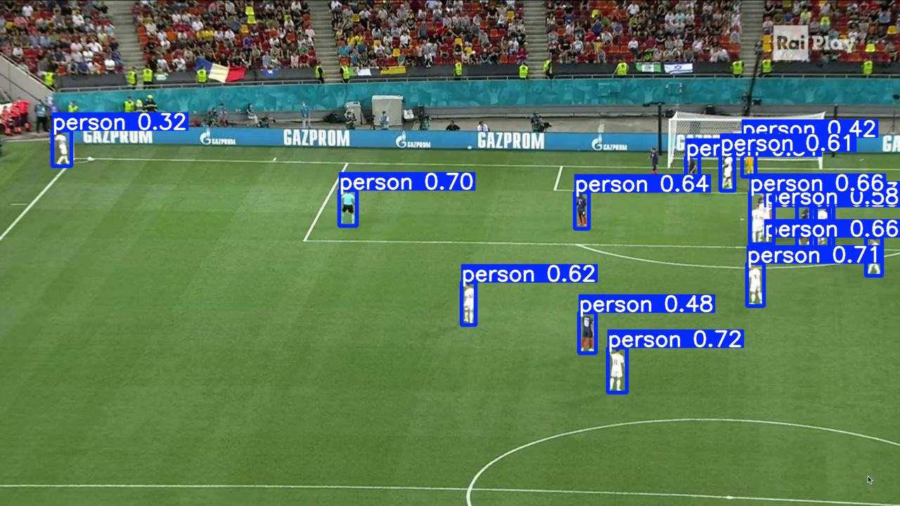
2.3 对照实验：从零训练 vs 迁移学习
v1 基线实验：同一数据集、同一超参数（imgsz=640, epochs=30, batch=16, lr0=0.01, patience=15），唯一变量是初始化权重。v2 优化版进一步升级：yolov8n→yolov8s、imgsz 640→832、epochs 30→100，并新增数据增强（batch=12, lr0=0.01, patience=30, device=0, mosaic=1.0, mixup=0.1, fliplr=0.5, close_mosaic=15, cache=True）：
| 指标 | scratch 从零训练 (yolov8n, 30 轮) | transfer v1 基线 (yolov8n, 30 轮) | transfer v2 优化版 (yolov8s, 100 轮) | v2 vs v1 |
|---|---|---|---|---|
| mAP50 (IoU=0.5) | 0.5321 | 0.6664 | 0.816 | +14.96 pp |
| mAP50-95 (严格) | 0.2973 | 0.4188 | 0.522 | +10.32 pp |
| Precision | 0.7361 | 0.8934 | 0.908 | +1.46 pp |
| Recall | 0.5247 | 0.6471 | 0.782 | +13.49 pp |
| 分类别 mAP50（football / player） | — | — | 0.643 / 0.990 | — |
| 训练用时 | 8.8 分钟 | 7.7 分钟 | 52.5 分钟 | +44.8 分钟 |
结论：迁移学习第 1 轮即达到 mAP50=0.52（接近 scratch 训练 30 轮的终点），v1 最终领先 scratch 12~16 个百分点；v2 优化版（yolov8s + 100 轮 + imgsz 832 + 数据增强）进一步把 mAP50 提到 0.816（相对 v1 +14.96 pp、相对从零训练 +28.4 pp），player 类 mAP50 达 0.990，football 小目标仍是主要瓶颈（0.643）——小数据集上预训练权重 + 模型容量 + 充分训练的收益非常显著[1]。
2.4 训练日志（摘录）
v1 基线对照（yolov8n，30 轮）：
===== 实验 [scratch] 初始权重: yolov8n.yaml ===== engine\trainer: ... batch=16, epochs=30, imgsz=640, lr0=0.01, patience=15, device=0 ... AMP: running Automatic Mixed Precision (AMP) checks... [scratch] 完成，用时 8.8 分钟 ===== 实验 [transfer] 初始权重: ...\weights\yolov8n.pt ===== engine\trainer: ... model=f:\deeplearn\projects\01_yolov8_detection\weights\yolov8n.pt ... Transferred 349/355 items from pretrained weights [transfer] 完成，用时 7.7 分钟 ============================================================== 指标 scratch 从零训练 transfer 迁移学习 ============================================================== mAP50 (IoU=0.5) 0.5321 0.6664 mAP50-95 (严格) 0.2973 0.4188 Precision 0.7361 0.8934 Recall 0.5247 0.6471 ============================================================== 迁移学习 mAP50 提升: +13.43 个百分点
v2 优化版训练（yolov8s，100 轮，2026-10-12 22:56 → 23:49）：
===== 优化版 v2 实验 [transfer] 初始权重: ...\weights\yolov8s.pt ===== engine\trainer: model=...\weights\yolov8s.pt, data=...\dataset\data.yaml, imgsz=832, epochs=100, batch=12, lr0=0.01, patience=30, device=0, mosaic=1.0, mixup=0.1, fliplr=0.5, close_mosaic=15, cache=True, hsv_h=0.015, hsv_s=0.7, hsv_v=0.4, scale=0.5, translate=0.1 ... Overriding model.yaml nc=80 with nc=2 Model summary: 129 layers, 11,136,374 parameters, 11,136,358 gradients, 28.6 GFLOPs Transferred 349/355 items from pretrained weights optimizer: 'optimizer=auto' found, ignoring 'lr0=0.01' and determining best 'optimizer' and 'lr0' automatically... optimizer: AdamW(lr=0.001667, momentum=0.9) with parameter groups 57 weight(decay=0.0), 64 weight(decay=0.00046875), 63 bias(decay=0.0) ---- 最后 15 轮（epoch 86 ~ 100）逐轮验证指标（val=all，243 图 / 4513 实例）---- epoch P R mAP50 mAP50-95 86 0.868 0.775 0.794 0.512 87 0.912 0.757 0.796 0.505 88 0.917 0.766 0.805 0.517 89 0.928 0.752 0.799 0.520 90 0.939 0.769 0.809 0.515 91 0.921 0.767 0.799 0.514 92 0.885 0.770 0.797 0.519 93 0.904 0.776 0.807 0.520 94 0.875 0.781 0.808 0.513 95 0.879 0.782 0.807 0.518 96 0.889 0.789 0.812 0.519 97 0.905 0.784 0.808 0.517 98 0.901 0.786 0.812 0.520 99 0.901 0.792 0.816 0.520 100 0.906 0.782 0.816 0.523 epoch 100 训练损失: box=0.76693 cls=0.34980 dfl=0.79666 epoch 100 验证损失: box=0.86040 cls=0.38335 dfl=0.82503 100 epochs completed in 0.863 hours. Optimizer stripped from F:\deeplearn\projects\01_yolov8_detection\results\transfer\weights\best.pt, 22.5MB Validating F:\deeplearn\projects\01_yolov8_detection\results\transfer\weights\best.pt... Ultralytics 8.4.175 Python-3.13.0 torch-2.11.0+cu128 CUDA:0 (NVIDIA GeForce RTX 4060 Laptop GPU, 8188MiB) Model summary (fused): 72 layers, 11,126,358 parameters, 0 gradients, 28.4 GFLOPs Class Images Instances Box(P R mAP50 mAP50-95) all 243 4513 0.908 0.782 0.816 0.522 football 199 262 0.842 0.58 0.643 0.291 player 242 4251 0.975 0.984 0.99 0.753 Speed: 0.4ms preprocess, 3.8ms inference, 0.0ms loss, 1.8ms postprocess per image Results saved to F:\deeplearn\projects\01_yolov8_detection\results\transfer [transfer] 完成，用时 52.5 分钟
2.5 训练过程可视化
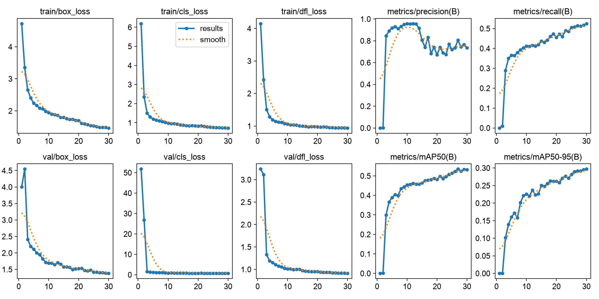
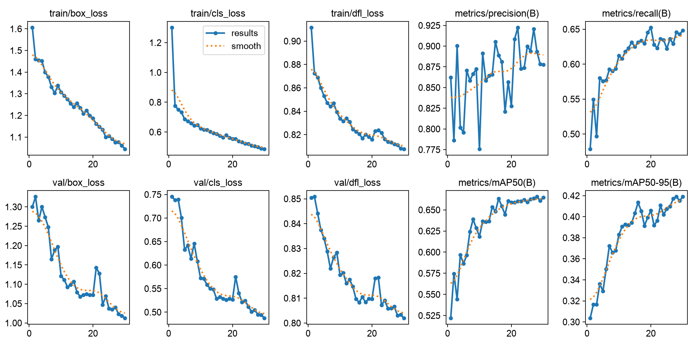
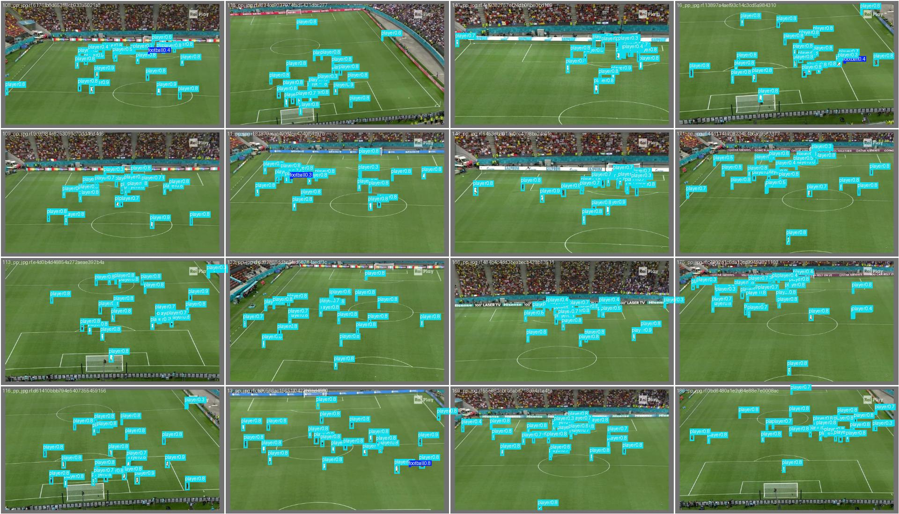
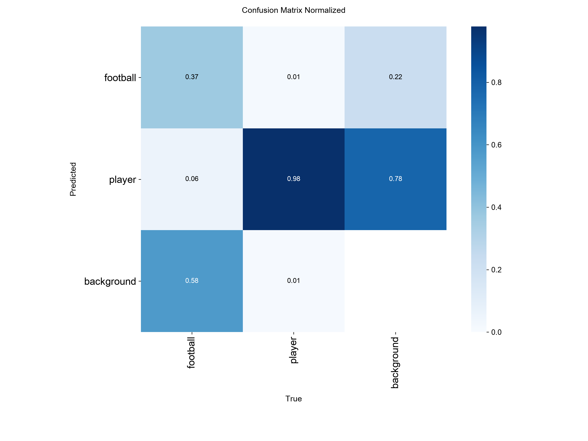
3. 项目二：GAN 与 Diffusion 图像生成
实现两种生成范式：DCGAN（对抗博弈）与 DDPM 扩散模型（逐步加噪-去噪），均在 MNIST 上训练。
3.1 DCGAN 对抗生成（30 轮）
生成器：全连接 → 4×上采样转置卷积（BatchNorm + ReLU，输出 Tanh）；判别器：4×步长卷积（LeakyReLU），最终 3×3 卷积压到 1×1 输出真假分数。训练中修复了三个结构性 bug：线性层未 reshape 成 4D、判别器卷核大于输入、多层上采样导致输出 56×56。
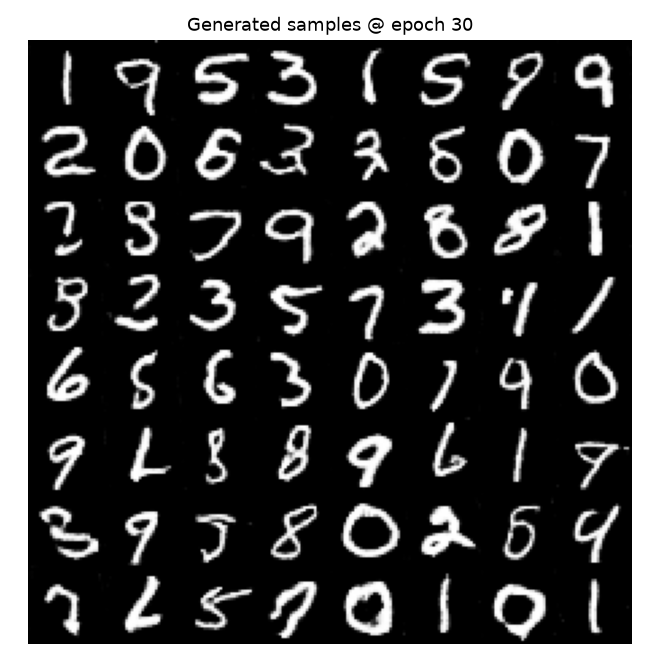
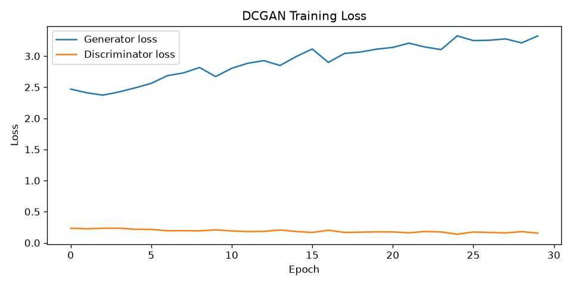
3.2 DDPM 扩散生成（T=300，20 轮）
前向过程 q_sample 逐步加噪（余弦/线性 beta 调度）；反向过程用 MiniUNet 预测每步噪声，按后验公式逐步去噪采样。训练中修复了 sample() 中占位死代码（补齐 alphas_bar 与均值公式）。
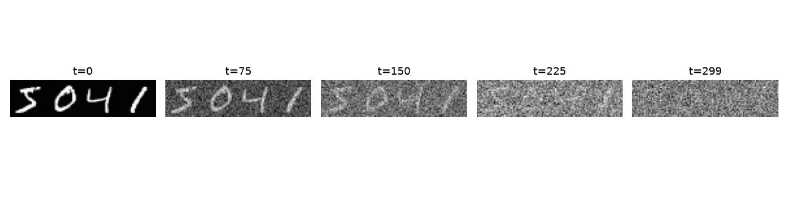
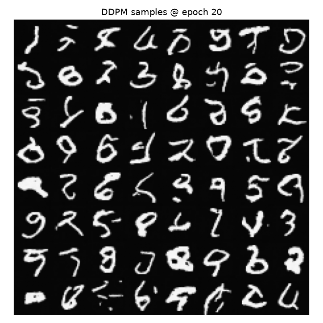
results/gen_epochXXX.png、ddpm_epochXXX.png、loss_curve.png），最终模型权重为 dcgan_G.pth / dcgan_D.pth / ddpm_unet.pth。4. 项目三：人脸关键点回归 + 表情识别
两个小数据集任务：68 个人脸关键点坐标回归与 FER2013 七类表情分类。
4.1 数据修复：逐图动态坐标缩放
sx = 96 / 该图宽度, sy = 96 / 该图高度 逐图计算后，坐标恢复到 [-9, 97] 的合理范围（仅 19 个边缘点因人脸贴边轻微越界）。4.2 68 关键点回归（KeypointCNN）
4 个卷积块（96→48→24→12→6）+ 全连接头输出 136 维（68×2），掩码 MSE 跳过缺失标注点，评估用 NME（归一化平均误差，除以双眼间距）。修复了 nme() 中 136→68 维掩码分组错误后完成 60 轮训练。
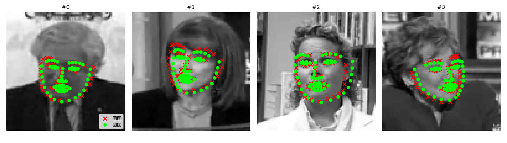
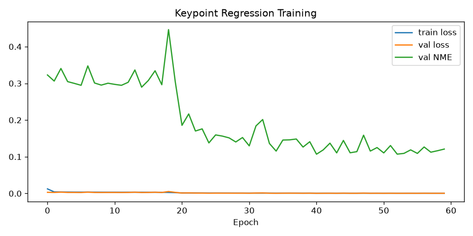
[Epoch 15/60] train=0.00337 val=0.00282 NME=0.3079 [Epoch 20/60] train=0.00213 val=0.00160 NME=0.2214 * [Epoch 25/60] train=0.00111 val=0.00083 NME=0.1608 * [Epoch 30/60] train=0.00093 val=0.00085 NME=0.1666 [Epoch 35/60] train=0.00079 val=0.00056 NME=0.1280 * [Epoch 40/60] train=0.00073 val=0.00065 NME=0.1407 [最佳] NME = 0.1106 （首次完整运行） # 修复可视化掩码 reshape 后复训最终模型： [最佳] NME = 0.1069 （最终模型，越小越好，<0.05 算优秀） [完成] 结果保存在 f:\deeplearn\projects\03_face_keypoints\results
4.3 FER2013 七类表情分类（EmotionCNN）
双卷积块×4 + 全局平均池化 + Dropout，共 117 万参数；数据严重不平衡（disgust 仅 496 张 vs happy 8065 张），配合 ReduceLROnPlateau 调度。
[设备] cuda
[数据] 共 35887 条样本, 字段: ['img_bytes', 'labels']
[划分] train=32299 val=3588
[类别分布] {'angry': 4471, 'disgust': 496, 'fear': 4632, 'happy': 8065,
'neutral': 5580, 'sad': 5492, 'surprise': 3563}
[模型] 参数量 1,175,399
[Epoch 01/25] loss=1.8058 val_acc=0.3342 *
[Epoch 03/25] loss=1.2823 val_acc=0.5460 *
...（完整逐轮日志已被终端清理，逐轮表现见下方误差样例与混淆矩阵）
最终验证准确率 acc = 0.651结果解读：happy（778/886）、surprise（349/439）、disgust（29/52）识别最好；angry / sad / fear / neutral 互相混淆严重——这与类别不平衡和人类表情本身的语义重叠一致，是 FER2013 的公认难点[4]。
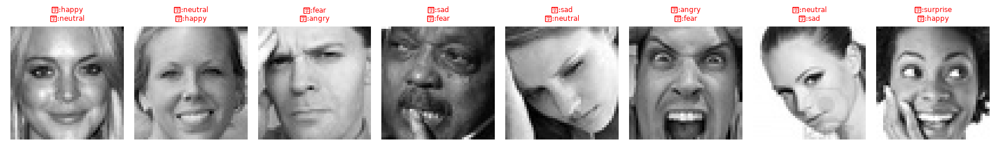
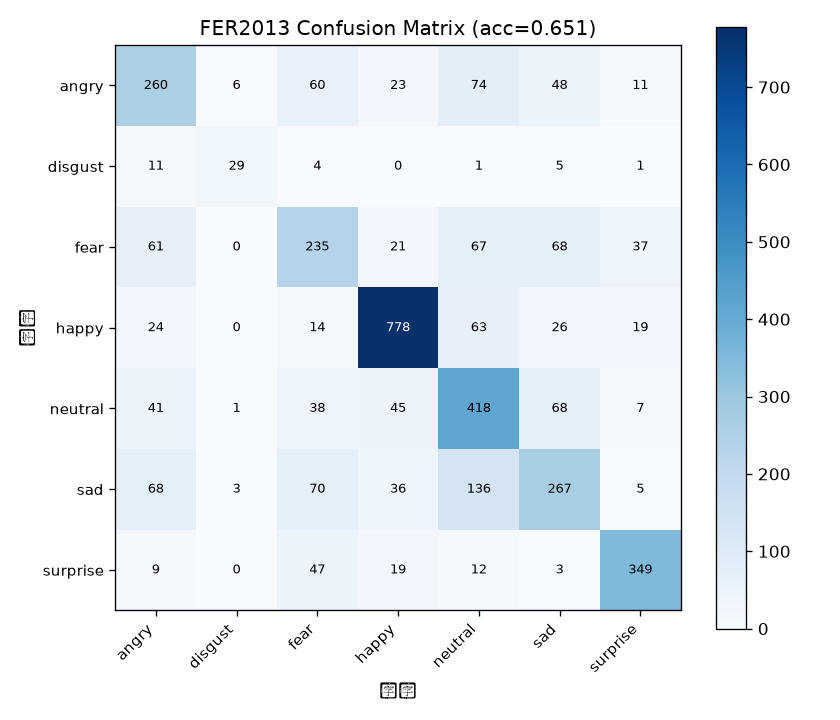
5. 项目四：CNN 特征图像检索
用 ResNet18 去分类头的 512 维特征 + L2 归一化 + 余弦相似度，在 CIFAR-10 万级图库上实现以图搜图。
5.1 系统设计
三步流程：① 建索引——10000 张图库图过 ResNet18 提特征、L2 归一化后存 gallery_features.npy；② 检索——查询图特征与图库做内积（归一化后内积=余弦相似度）取 top-k；③ 评估——2000 次查询统计 Precision@1/5/10，与随机基线对比。
| 指标 | CNN 特征 | 随机基线 | 提升 |
|---|---|---|---|
| Precision@1 | 74.8% | 9.8% | 7.6× |
| Precision@5 | 70.7% | 10.0% | 7.1× |
| Precision@10 | 68.4% | 10.1% | 6.8× |

[设备] cuda [图库] 10000 张图, 特征维度 512 [查询] 第 42 张图, 真实类别 = dog top 1 dog sim=0.844 ✓ top 2 dog sim=0.839 ✓ top 3 dog sim=0.839 ✓ top 4 cat sim=0.836 ✗ top 5 dog sim=0.836 ✓ top 6 bird sim=0.830 ✗ ... [评估] 计算中（2000 次查询）... 指标 CNN特征 随机基线 Precision@1 74.8% 9.8% Precision@5 70.7% 10.0% Precision@10 68.4% 10.1% [结论] CNN 特征的 Precision 远高于随机基线，证明深度特征有语义区分度
工程要点：相似度计算本质是矩阵-向量乘（feats @ query），万级图库毫秒级返回；扩展到百万级可引入 FAISS 等向量检索库做近似最近邻（ANN）。观察到 cat/dog/bird 相似度接近（0.82~0.84），说明细粒度类别的特征空间距离天然更近。
6. 总结：关键问题、修复与原理串联
6.1 调试过程中修复的关键 bug
| 项目 | 症状 | 根因 | 修复 |
|---|---|---|---|
| 01 | 转换后图片 FileNotFoundError | 目标路径拼接到源图目录父级 | 为 coco_to_yolo 增加显式 dst_img_dir 参数 |
| 01 | VOC 数据集无法训练 | 手头数据只有 image+mask 无 bbox | 更换为 COCO 格式 football 检测数据集 |
| 02 | conv_transpose2d 收到 2D 张量 | 生成器线性层输出未 reshape 4D | 拆分 fc 与 deconv，view(-1,256,7,7) |
| 02 | 判别器卷核 4 > 输入 3×3 | 末层卷积配置错误 | 改 kernel=3, padding=0 |
| 02 | DDPM sample() 输出异常 | 占位死代码未实现后验均值 | 补齐 alphas_bar 与去噪均值公式 |
| 03 | 关键点 y 最大 206 超出 96 | 每张图尺寸不同，坐标按各自原图标注 | 逐图动态缩放 96/w, 96/h |
| 03 | nme() 形状 (64) vs (128) | 136 维掩码直接 reshape 成 68 分组错误 | 先 reshape(-1,68,2) 再 .all(-1) |
| 03 | loss 非标量无法 backward | MSELoss reduction='none' | 掩码加权 (diff*mb).sum()/mb.sum() |
| 04 | KeyError: 'image' | CIFAR parquet 列名是 img | 条件取列 "img" if "img" in df.columns else "image" |
| 环境 | 下载卡死（HF/GitHub 被墙） | 单连接限速 | 16 线程 Range 分块断点续传下载器 |
6.2 原理串联：一套方法论覆盖四类任务
① 迁移学习（项目1）：预训练骨干 + 小数据微调是工业界默认范式，本实验量化为 v1 +13.4 pp、v2 优化版（yolov8s）+28.4 pp mAP50（相对从零训练，v2 相对 v1 再 +15.0 pp）。② 生成模型（项目2）：GAN 以对抗博弈隐式建模分布，DDPM 以回归噪声显式建模逐步去噪——两者在同数据集上的质量/稳定性差异清晰可见。③ 回归与评估设计（项目3）：掩码损失处理缺失标注、NME 按双眼间距归一化使不同尺寸样本可比、混淆矩阵暴露类别不平衡。④ 表征学习（项目4）：分类网络的中间特征天然携带语义——分类 / 检测 / 关键点 / 检索共享同一套卷积骨干与训练循环，只是损失头不同。
对初学者最有价值的三条经验：数据正确性（坐标系/格式）优先于模型调参；对照实验（消融）比单一结果更有说服力；bug 修复过程本身就是对张量形状、数据管线理解最深的训练。
7. 附录：全部项目源代码
10 个实验脚本完整源码（含中文函数与注释），按项目与执行顺序排列。
项目一 · YOLOv8 目标检测
# -*- coding: utf-8 -*-
"""
项目1-①：数据准备 —— COCO 格式转 YOLO 格式
=============================================
实验内容：
1. 解压足球目标检测数据集（roboflow 导出，COCO 格式标注）
2. 把 COCO 边界框 (x, y, w, h 绝对像素) 转成 YOLO 归一化格式
YOLO txt 每行: <class_id> <cx/W> <cy/H> <w/W> <h/H>
3. 生成 ultralytics 训练所需的 data.yaml 与目录结构
4. 另存若干样例图片供 02_inference_demo.py 演示用
学到的原理：目标检测标注格式（COCO vs YOLO）、数据集划分
"""
import json
import os
import shutil
import sys
import zipfile
from PIL import Image
# ---------------- 路径配置 ----------------
BASE_DIR = os.path.dirname(os.path.abspath(__file__))
DATA_ROOT = r"f:\deeplearn\datasets\football" # 原始 zip 存放处
WORK_DIR = os.path.join(BASE_DIR, "dataset") # 转换后的 YOLO 数据集
SAMPLE_DIR = os.path.join(BASE_DIR, "samples") # 演示样例图片
SPLITS = ["train", "valid", "test"] # roboflow 的三个划分
SPLIT_ALIAS = {"train": "train", "valid": "val", "test": "test"}
def extract_zip(zip_path: str, out_dir: str) -> str:
"""解压 zip 并返回包含 _annotations.coco.json 的目录"""
target = os.path.join(out_dir, os.path.splitext(os.path.basename(zip_path))[0])
if not os.path.exists(target):
with zipfile.ZipFile(zip_path) as zf:
zf.extractall(target)
# 递归查找标注文件（roboflow 的压缩包层级可能不同）
for root, _, files in os.walk(target):
if "_annotations.coco.json" in files:
return root
raise FileNotFoundError(f"在 {target} 中未找到 _annotations.coco.json")
def build_file_index(*roots: str) -> dict:
"""预先扫描目录树，建立「文件名 -> 完整路径」索引
优化点：原逻辑对每张缺失图片都从根目录 os.walk 全树查找，
复杂度 O(N×树深度)；改为一次性建索引后查找为 O(1)。
参数：
roots: 要扫描的若干根目录
返回：{文件名: 完整路径} 字典（同名文件先扫描到的优先）
"""
index = {}
for root in roots:
for dirpath, _, files in os.walk(root):
for fn in files:
index.setdefault(fn, os.path.join(dirpath, fn))
return index
def coco_to_yolo(ann_path: str, img_dir: str, dst_img_dir: str,
label_dir: str, file_index: dict = None,
force: bool = False) -> tuple:
"""把一份 COCO 标注转成 YOLO txt 标签文件
参数：
ann_path : COCO 标注 json 路径
img_dir : 原始图片目录
dst_img_dir: 转换后图片输出目录（统一转 jpg）
label_dir : YOLO 标签输出目录（与图片同名 .txt）
file_index : 预建的 文件名->路径 索引（由 build_file_index 生成）
force : True 时忽略已转换结果，强制重新转换
返回 (类别名列表, 转换的图片数)
"""
os.makedirs(dst_img_dir, exist_ok=True)
# 未传入索引时现场构建一次（兼容直接调用本函数的场景）
if file_index is None:
file_index = build_file_index(img_dir)
with open(ann_path, "r", encoding="utf-8") as f:
coco = json.load(f)
# COCO 类别 id 不一定连续，这里映射到 YOLO 的 0..nc-1
cat_ids = [c["id"] for c in sorted(coco["categories"], key=lambda x: x["id"])]
cat_id2yolo = {cid: i for i, cid in enumerate(cat_ids)}
cat_names = [c["name"] for c in sorted(coco["categories"], key=lambda x: x["id"])]
# 按图片分组标注
anns_by_img = {}
for ann in coco.get("annotations", []):
anns_by_img.setdefault(ann["image_id"], []).append(ann)
os.makedirs(label_dir, exist_ok=True)
n_images = 0
for img_info in coco["images"]:
file_name = os.path.basename(img_info["file_name"])
# O(1) 查索引；未命中时兜底按原始路径直接拼接
src = file_index.get(file_name, os.path.join(img_dir, file_name))
if not os.path.exists(src):
continue
W, H = img_info["width"], img_info["height"]
# 转换该图的所有框
lines = []
for ann in anns_by_img.get(img_info["id"], []):
if ann.get("iscrowd", 0):
continue
x, y, w, h = ann["bbox"] # COCO: 左上角 + 宽高
cx, cy = x + w / 2, y + h / 2 # 转中心点
cls = cat_id2yolo[ann["category_id"]]
# 归一化：中心点裁剪到 [0,1]
cx, cy = min(max(cx / W, 0), 1), min(max(cy / H, 0), 1)
# 优化：宽高联动裁剪 —— 框贴边时同步收缩，
# 保证 cx±w/2、cy±h/2 不越界，避免出现越界标注
w_n, h_n = min(w / W, 1), min(h / H, 1)
w_n = min(w_n, 2 * min(cx, 1 - cx)) # 不超出左右边界
h_n = min(h_n, 2 * min(cy, 1 - cy)) # 不超出上下边界
lines.append(f"{cls} {cx:.6f} {cy:.6f} {w_n:.6f} {h_n:.6f}")
# 图片复制到 images/，标签写到 labels/（同名不同后缀）
dst_name = os.path.splitext(file_name)[0] + ".jpg"
dst_img = os.path.join(dst_img_dir, dst_name)
dst_lbl = os.path.join(label_dir, os.path.splitext(dst_name)[0] + ".txt")
# 优化：幂等输出 —— 非 force 时跳过已转换的图片与标签
if force or not (os.path.exists(dst_img) and os.path.exists(dst_lbl)):
Image.open(src).convert("RGB").save(dst_img, quality=92)
with open(dst_lbl, "w") as f:
f.write("\n".join(lines))
n_images += 1
return cat_names, n_images
def write_data_yaml(cat_names: list) -> str:
"""生成 ultralytics 训练配置 data.yaml"""
path = os.path.join(WORK_DIR, "data.yaml")
names_yaml = "\n".join(f" {i}: {n}" for i, n in enumerate(cat_names))
content = (f"path: {WORK_DIR}\n"
f"train: images/train\n"
f"val: images/val\n"
f"test: images/test\n"
f"nc: {len(cat_names)}\n"
f"names:\n{names_yaml}\n")
with open(path, "w", encoding="utf-8") as f:
f.write(content)
return path
def save_samples() -> None:
"""从 test 集抽 8 张图作为推理演示样例"""
os.makedirs(SAMPLE_DIR, exist_ok=True)
src_dir = os.path.join(WORK_DIR, "images", "test")
files = sorted(os.listdir(src_dir))[:8]
for i, fn in enumerate(files):
shutil.copy(os.path.join(src_dir, fn),
os.path.join(SAMPLE_DIR, f"sample_{i:02d}.jpg"))
print(f"[样例] {len(files)} 张 -> {SAMPLE_DIR}")
def parse_args():
"""命令行参数：数据根目录 / 输出目录 / 是否强制重转"""
import argparse
p = argparse.ArgumentParser(description="COCO -> YOLO 数据集转换")
p.add_argument("--data-root", default=DATA_ROOT,
help=f"原始 zip 数据目录（默认 {DATA_ROOT}）")
p.add_argument("--out", default=WORK_DIR,
help=f"转换输出目录（默认 {WORK_DIR}）")
p.add_argument("--force", action="store_true",
help="忽略已转换结果，强制全量重新转换")
return p.parse_args()
def main(args=None) -> None:
"""主函数：解压 -> 逐划分转换 -> 写 data.yaml -> 存样例
参数：
args: parse_args() 的返回值；None 时用默认配置（供包内调用安全使用，
不读取 sys.argv，避免宿主程序参数干扰）
"""
global WORK_DIR, SAMPLE_DIR # 需在函数开头声明，允许被 --out 覆盖
if args is None:
import argparse
args = argparse.Namespace(data_root=DATA_ROOT, out=WORK_DIR, force=False)
# 让输出目录跟随 --out 参数（样例目录保持默认行为不变，
# 以免破坏 02_inference_demo.py 对 BASE_DIR\samples 的引用）
if args.out != WORK_DIR:
WORK_DIR = args.out
SAMPLE_DIR = os.path.join(WORK_DIR, "samples")
print("[开始] 足球检测数据集转换 (COCO -> YOLO)")
cat_names = None
for split in SPLITS:
zip_path = os.path.join(args.data_root, f"{split}.zip")
if not os.path.exists(zip_path):
raise FileNotFoundError(f"缺少 {zip_path}，请先下载数据集")
ann_dir = extract_zip(zip_path, os.path.join(WORK_DIR, "raw"))
# 目录布局: raw/<split>/{images..., _annotations.coco.json}
img_dir = os.path.join(ann_dir, "images")
if not os.path.isdir(img_dir):
# 兜底：标注同级目录即图片目录
img_dir = ann_dir
out_label_dir = os.path.join(WORK_DIR, "labels",
SPLIT_ALIAS[split])
out_img_dir = os.path.join(WORK_DIR, "images", SPLIT_ALIAS[split])
# 优化：一次性建立 文件名->路径 索引，避免逐图全树查找
file_index = build_file_index(img_dir)
names, n = coco_to_yolo(
os.path.join(ann_dir, "_annotations.coco.json"),
img_dir, out_img_dir, out_label_dir,
file_index=file_index, force=args.force)
cat_names = cat_names or names
print(f" [{split}] {n} 张图, 类别: {names}")
yaml_path = write_data_yaml(cat_names)
save_samples()
print(f"[完成] YOLO 数据集 -> {WORK_DIR}")
print(f" 配置文件 -> {yaml_path}")
if __name__ == "__main__":
sys.exit(main(parse_args()))
# -*- coding: utf-8 -*-
"""
项目1-②：YOLOv8 预训练模型推理演示（零样本检测）
===================================================
实验内容：
1. 加载 COCO 预训练的 yolov8n.pt，在本地样例图片上做推理
2. 输出每个检测框的位置 (x, y, w, h)、类别、置信度
3. 可视化检测结果并保存，直观理解「目标检测 = 定位 + 分类」
学到的原理：边界框、置信度、NMS 非极大值抑制、mAP 评估
"""
import glob
import os
import sys
from ultralytics import YOLO
# ---------------- 路径配置 ----------------
BASE_DIR = os.path.dirname(os.path.abspath(__file__))
WEIGHTS = os.path.join(BASE_DIR, "weights", "yolov8n.pt") # COCO 预训练权重
SAMPLE_DIR = os.path.join(BASE_DIR, "samples") # 样例图片（由 01 脚本生成）
OUT_DIR = os.path.join(BASE_DIR, "results", "inference")
def check_weights() -> str:
"""检查预训练权重是否存在，不存在则给出国内可用的下载指引"""
if not os.path.exists(WEIGHTS):
raise FileNotFoundError(
f"未找到权重: {WEIGHTS}\n"
"请手动下载（GitHub 被墙时可用镜像）：\n"
" curl -L -o weights/yolov8n.pt "
"https://hf-mirror.com/ultralytics/yolov8/resolve/main/yolov8n.pt"
)
return WEIGHTS
def run_inference(model: YOLO, image_paths: list) -> list:
"""对一批图片做推理，返回结果列表
返回的 results[i].boxes 中包含：
- xyxy : 左上角+右下角坐标 (4,)
- conf : 置信度 (1,)
- cls : 类别 id (1,)
"""
results = model.predict(
source=image_paths,
save=True, # 同时把画框图保存到 results/inference/
project=OUT_DIR,
exist_ok=True,
conf=0.25, # 置信度阈值：低于 0.25 的框被丢弃
imgsz=640,
device=0 if _cuda() else "cpu",
verbose=False,
)
return results
def _cuda() -> bool:
"""是否有可用 CUDA 设备"""
import torch
return torch.cuda.is_available()
def print_detections(model: YOLO, results: list) -> None:
"""打印每张图的检测明细，帮助理解模型输出格式"""
names = model.names # {class_id: 类名}
for res in results:
file = os.path.basename(res.path)
boxes = res.boxes
if len(boxes) == 0:
print(f" {file}: 未检测到物体")
continue
print(f" {file}: 共 {len(boxes)} 个目标")
# 按置信度从高到低排序输出
order = boxes.conf.argsort(descending=True)
for i in order:
x1, y1, x2, y2 = boxes.xyxy[i].tolist()
conf = float(boxes.conf[i])
cls_id = int(boxes.cls[i])
print(f" - {names[cls_id]:>10s} conf={conf:.2f} "
f"框=({x1:.0f},{y1:.0f})-({x2:.0f},{y2:.0f})")
def main() -> None:
"""主函数：加载权重 -> 找样例图 -> 接力推理 -> 打印明细"""
weights = check_weights()
model = YOLO(weights)
print(f"[模型] 已加载 {weights}")
print(f"[类别] 共 {len(model.names)} 个 COCO 类别: "
f"{', '.join(model.names.values())}")
# 查找样例图片
image_paths = sorted(
glob.glob(os.path.join(SAMPLE_DIR, "*.jpg")) +
glob.glob(os.path.join(SAMPLE_DIR, "*.png"))
)
if not image_paths:
raise FileNotFoundError(
f"样例目录为空: {SAMPLE_DIR}\n请先运行 01_prepare_voc.py 生成样例图片"
)
print(f"[输入] {len(image_paths)} 张样例图片")
results = run_inference(model, image_paths)
print_detections(model, results)
print(f"[完成] 画框结果已保存到 {os.path.join(OUT_DIR, 'predict')}")
if __name__ == "__main__":
sys.exit(main())
# -*- coding: utf-8 -*-
"""
项目1-③：YOLOv8 目标检测训练实验（迁移学习 vs 从零训练）
==========================================================
实验内容：
A. transfer ：加载 COCO 预训练权重，在 VOC 子集上微调（迁移学习）
B. scratch ：相同结构、随机初始化，从零开始训练（对照组）
两组使用完全相同的数据/超参数，对比收敛速度与最终 mAP
学到的原理：迁移学习、预训练特征复用、消融实验设计、mAP50/mAP50-95
"""
import argparse
import os
import sys
import time
from ultralytics import YOLO
# ---------------- 配置 ----------------
BASE_DIR = os.path.dirname(os.path.abspath(__file__))
DATA_YAML = os.path.join(BASE_DIR, "dataset", "data.yaml") # 由 01_prepare 生成
WEIGHTS = os.path.join(BASE_DIR, "weights", "yolov8s.pt") # COCO 预训练 yolov8s（升级自 yolov8n）
RESULTS = os.path.join(BASE_DIR, "results")
# 实验共用超参数（保证公平对比）
# —— 效果优化点：n->s 换更大模型 / 更长训练 / 小数据集增强 ——
CONFIG = dict(
imgsz=832, # 输入尺寸 640->832（更小目标更清晰，8GB 显存下 yolov8s 仍安全）
epochs=100, # 训练轮数 30->100（配合下面 patience 早停防过拟合）
batch=12, # 批大小（yolov8s @832 下 8GB 显存稳妥值）
lr0=0.01, # 初始学习率
patience=30, # 早停轮数 15->30（给更长训练留出收敛空间）
device=0, # GPU id
# ---- 数据增强（训练集仅 859 张，小数据集收益最大）----
mosaic=1.0, # Mosaic 四图拼接：等效放大感受野与样本多样性
mixup=0.1, # MixUp 图片混合：轻微正则化，防过拟合
fliplr=0.5, # 水平翻转（足球场景左右对称合理）
close_mosaic=15, # 最后 15 轮关闭 mosaic，用原图精细收敛
cache=True, # 图片缓存进内存，859 张小图 IO 几乎为零
)
def train_variant(name: str, weights: str, data_yaml: str, args) -> dict:
"""训练一个变体，返回评估指标 dict
参数：
name : 实验名（transfer / scratch）
weights: 初始权重文件（预训练 or 随机初始化的结构定义）
args : 命令行参数（支持 --quick 快速冒烟）
"""
print(f"\n===== 实验 [{name}] 初始权重: {weights} =====")
model = YOLO(weights)
cfg = dict(CONFIG)
if args.quick: # 冒烟测试：极小规模验证全流程可跑通
cfg.update(epochs=2, imgsz=320, batch=8)
t0 = time.time()
train_kw = dict(
data=data_yaml,
name=name,
project=RESULTS,
exist_ok=True,
verbose=True,
# 注意：cache=True 已统一放在 CONFIG 中，此处不可重复声明
)
# 断点续训：接续上次中断的训练（仅在有历史 checkpoint 时生效）
if getattr(args, "resume", False):
train_kw.update(resume=True)
results = model.train(**cfg, **train_kw)
train_time = time.time() - t0
# 训练结束后自动在 val 集上评估，best.pt 的指标如下：
metrics = results.results_dict
metrics["train_time_min"] = train_time / 60
print(f"[{name}] 完成，用时 {train_time/60:.1f} 分钟")
return metrics
def print_comparison(m_scratch: dict, m_transfer: dict) -> None:
"""打印对照实验结果表：核心看 mAP 与收敛速度差异"""
rows = [
("mAP50 (IoU=0.5)", "metrics/mAP50(B)"),
("mAP50-95 (严格)", "metrics/mAP50-95(B)"),
("Precision", "metrics/precision(B)"),
("Recall", "metrics/recall(B)"),
("训练时长(分钟)", "train_time_min"),
]
print("\n" + "=" * 62)
print(f"{'指标':<22}{'scratch 从零训练':>18}{'transfer 迁移学习':>20}")
print("-" * 62)
for label, key in rows:
a, b = m_scratch.get(key, float("nan")), m_transfer.get(key, float("nan"))
print(f"{label:<22}{a:>18.4f}{b:>20.4f}")
print("=" * 62)
gain = (m_transfer.get("metrics/mAP50(B)", 0) -
m_scratch.get("metrics/mAP50(B)", 0)) * 100
print(f"迁移学习 mAP50 提升: {gain:+.2f} 个百分点")
print("结论: 预训练权重带来更好的初始化，收敛更快、精度更高 → 迁移学习的价值")
def main() -> None:
"""主函数：支持 --variant 只跑单组，默认跑完整对照实验"""
parser = argparse.ArgumentParser(description="YOLOv8 对照实验")
parser.add_argument("--variant", choices=["transfer", "scratch", "both"],
default="both", help="跑哪组实验")
parser.add_argument("--quick", action="store_true", help="快速冒烟测试")
parser.add_argument("--resume", action="store_true",
help="断点续训：接续上次中断的训练进度")
args = parser.parse_args()
if not os.path.exists(DATA_YAML):
raise FileNotFoundError(f"未找到 {DATA_YAML}，请先运行 01_prepare_voc.py")
os.makedirs(RESULTS, exist_ok=True)
import torch
print(f"[设备] {'cuda' if torch.cuda.is_available() else 'cpu'}")
out = {}
if args.variant in ("scratch", "both"):
# 从零训练：yolov8s.yaml 是网络结构定义，随机初始化权重
out["scratch"] = train_variant(
"scratch", "yolov8s.yaml", DATA_YAML, args)
if args.variant in ("transfer", "both"):
# 迁移学习：加载 COCO 预训练权重微调
out["transfer"] = train_variant(
"transfer", WEIGHTS, DATA_YAML, args)
if len(out) == 2:
print_comparison(out["scratch"], out["transfer"])
if __name__ == "__main__":
sys.exit(main())
项目二 · GAN 与 Diffusion 生成
# -*- coding: utf-8 -*-
"""
项目2-①：DCGAN 生成手写数字（MNIST）
=====================================
实验内容：
1. 从本地 parquet 加载 MNIST 数据集（无需联网）
2. 定义并训练 DCGAN（生成器 G + 判别器 D 对抗训练）
3. 每个 epoch 保存生成样本网格图，观察生成质量演化
4. 绘制 G/D 损失曲线，分析对抗训练的平衡过程
学到的原理：生成对抗网络、反卷积上采样、对抗损失、模式崩塌
"""
import io
import os
import sys
import argparse
import numpy as np
import pandas as pd
import torch
import torch.nn as nn
from PIL import Image
from torch.utils.data import DataLoader, TensorDataset
import matplotlib.pyplot as plt
# ---------------- 超参数 ----------------
EPOCHS = 30 # 训练轮数（8GB GPU 上约几分钟一轮）
BATCH_SIZE = 128 # 批大小
LATENT_DIM = 100 # 噪声向量维度 z 的维度
LR = 2e-4 # 学习率（GAN 常用 Adam + 较小学习率）
BETA1 = 0.5 # Adam 一阶动量衰减（GAN 论文推荐 0.5）
DEVICE = torch.device("cuda" if torch.cuda.is_available() else "cpu")
SAMPLE_EVERY = 5 # 每隔几轮保存一次生成样本
MNIST_PARQUET = r"f:\deeplearn\datasets\mnist\train.parquet"
OUT_DIR = os.path.join(os.path.dirname(os.path.abspath(__file__)), "results")
# ================= 数据加载 =================
def load_mnist_images(path: str) -> np.ndarray:
"""从 HF 版 MNIST parquet 中解码出灰度图片数组 (N, 1, 28, 28)，值域 [-1, 1]
防御式解析：HF 的 parquet 图片列可能是 struct{bytes, path}，
也可能直接是 bytes 列，这里两种都兼容。
"""
df = pd.read_parquet(path)
print(f"[数据] 列名: {list(df.columns)}, 共 {len(df)} 条样本")
img_series = df["image"]
first = img_series.iloc[0]
imgs = []
# 根据列的实际结构提取 PNG 字节流
if isinstance(first, dict) or hasattr(first, "keys"): # struct 列
raw_iter = img_series.map(lambda d: d["bytes"])
else:
raw_iter = img_series
for raw in raw_iter:
img = Image.open(io.BytesIO(bytes(raw))).convert("L") # 强制灰度
imgs.append(np.asarray(img, dtype=np.float32))
arr = np.stack(imgs) # (N, 28, 28)
arr = arr / 127.5 - 1.0 # 归一化到 [-1, 1]，与 tanh 输出对齐
return arr[:, None, :, :] # -> (N, 1, 28, 28)
def make_dataloader(arr: np.ndarray) -> DataLoader:
"""把 numpy 数组包装成 PyTorch DataLoader"""
ds = TensorDataset(torch.from_numpy(arr))
return DataLoader(ds, batch_size=BATCH_SIZE, shuffle=True,
num_workers=0, drop_last=True, pin_memory=True)
# ================= 模型定义 =================
def weights_init(m: nn.Module) -> None:
"""DCGAN 论文的权重初始化：卷积/线性层用均值0、标准差0.02 的正态分布，
避免初始方差过大导致训练不稳定"""
classname = m.__class__.__name__
if classname.find("Conv") != -1:
nn.init.normal_(m.weight.data, 0.0, 0.02)
elif classname.find("BatchNorm") != -1:
nn.init.normal_(m.weight.data, 1.0, 0.02)
nn.init.constant_(m.bias.data, 0)
class Generator(nn.Module):
"""生成器：噪声 z (100维) -> 28x28 灰度图
结构：全连接上采样到 7x7，再经过 3 层转置卷积（stride=2）逐级放大：
7x7 -> 14x14 -> 28x28，BatchNorm + ReLU，输出层 tanh 到 [-1,1]
"""
def __init__(self):
super().__init__()
# 第一段：噪声向量展平映射到 7x7 特征图
self.fc = nn.Sequential(
nn.Linear(LATENT_DIM, 256 * 7 * 7, bias=False),
nn.BatchNorm1d(256 * 7 * 7),
nn.ReLU(True),
)
# 第二段：转置卷积逐级上采样到 28x28
self.deconv = nn.Sequential(
self._deconv_block(256, 128), # 7x7 -> 14x14
self._deconv_block(128, 64), # 14x14 -> 28x28
nn.Conv2d(64, 1, kernel_size=3, padding=1), # 28x28 -> 1 通道
nn.Tanh(), # 输出像素值范围 [-1, 1]
)
@staticmethod
def _deconv_block(in_c: int, out_c: int) -> nn.Sequential:
"""一个「转置卷积 + BatchNorm + ReLU」上采样块"""
return nn.Sequential(
nn.ConvTranspose2d(in_c, out_c, kernel_size=4, stride=2, padding=1, bias=False),
nn.BatchNorm2d(out_c),
nn.ReLU(True),
)
def forward(self, z: torch.Tensor) -> torch.Tensor:
z = z.view(z.size(0), -1) # (B, 100)
h = self.fc(z).view(-1, 256, 7, 7) # -> (B, 256, 7, 7)
return self.deconv(h) # -> (B, 1, 28, 28)
class Discriminator(nn.Module):
"""判别器：28x28 灰度图 -> 真/假 的 logit
结构：3 层 stride=2 卷积逐级降采样（28->14->7->3），LeakyReLU，
输出层不带 sigmoid（配合 BCEWithLogitsLoss 更数值稳定）
"""
def __init__(self):
super().__init__()
self.net = nn.Sequential(
self._conv_block(1, 64), # 28x28 -> 14x14
self._conv_block(64, 128), # 14x14 -> 7x7
self._conv_block(128, 256), # 7x7 -> 3x3
nn.Conv2d(256, 1, kernel_size=3, stride=1, padding=0), # 3x3 -> 1x1
)
@staticmethod
def _conv_block(in_c: int, out_c: int) -> nn.Sequential:
"""一个「卷积 + BatchNorm + LeakyReLU」下采样块"""
return nn.Sequential(
nn.Conv2d(in_c, out_c, 4, 2, 1, bias=False),
nn.BatchNorm2d(out_c),
nn.LeakyReLU(0.2, inplace=True),
)
def forward(self, x: torch.Tensor) -> torch.Tensor:
return self.net(x).view(-1)
# ================= 训练流程 =================
def train_one_epoch(G, D, loader, opt_g, opt_d, criterion, epoch: int) -> tuple:
"""训练一个 epoch，返回 (G 损失均值, D 损失均值)
每个 batch 的两步更新：
1) 训练 D：真实图标签为1，G 生成的假图标签为0，二分类交叉熵
2) 训练 G：希望 D 把假图判成 1（即骗过判别器）
"""
G.train(); D.train()
g_losses, d_losses = [], []
for (real,) in loader:
real = real.to(DEVICE, non_blocking=True)
b = real.size(0)
fake = G(torch.randn(b, LATENT_DIM, device=DEVICE))
# ---- 第一步：更新判别器 ----
D.zero_grad(set_to_none=True)
loss_real = criterion(D(real), torch.ones(b, device=DEVICE)) # 真图 -> 1
loss_fake = criterion(D(fake.detach()), torch.zeros(b, device=DEVICE)) # 假图 -> 0
d_loss = (loss_real + loss_fake) / 2
d_loss.backward()
opt_d.step()
# ---- 第二步：更新生成器 ----
G.zero_grad(set_to_none=True)
g_loss = criterion(D(fake), torch.ones(b, device=DEVICE)) # 希望 D 误判假图为真
g_loss.backward()
opt_g.step()
g_losses.append(g_loss.item())
d_losses.append(d_loss.item())
return float(np.mean(g_losses)), float(np.mean(d_losses))
@torch.no_grad()
def save_sample_grid(G, epoch: int, n: int = 64, path: str = None) -> None:
"""保存 n 张生成样本拼成的 8x8 网格图，用于肉眼评估生成质量"""
G.eval()
z = torch.randn(n, LATENT_DIM, device=DEVICE)
imgs = G(z).cpu() * 0.5 + 0.5 # [-1,1] -> [0,1]
grid = imgs.view(n, 1, 28, 28)
# 手工拼 8x8 网格：每行横向拼 8 张 (1,28,224)，再纵向堆 8 行 (1,224,224)
rows = [torch.cat([grid[i * 8 + j] for j in range(8)], dim=2) for i in range(8)]
canvas = torch.cat(rows, dim=1).squeeze(0).numpy() # (224, 224)
plt.figure(figsize=(6, 6))
plt.imshow(canvas, cmap="gray")
plt.axis("off")
plt.title(f"Generated samples @ epoch {epoch}")
plt.tight_layout()
plt.savefig(path, dpi=110)
plt.close()
def plot_losses(history: dict, path: str) -> None:
"""绘制 G / D 损失曲线，观察两者的对抗博弈是否稳定"""
plt.figure(figsize=(8, 4))
plt.plot(history["g"], label="Generator loss")
plt.plot(history["d"], label="Discriminator loss")
plt.xlabel("Epoch"); plt.ylabel("Loss"); plt.legend()
plt.title("DCGAN Training Loss")
plt.tight_layout(); plt.savefig(path, dpi=120); plt.close()
def main() -> None:
"""主函数：加载数据 -> 构建模型 -> 训练 -> 保存结果"""
parser = argparse.ArgumentParser(description="DCGAN MNIST 训练")
parser.add_argument("--epochs", type=int, default=EPOCHS)
parser.add_argument("--quick", action="store_true", help="快速冒烟测试（2轮）")
args = parser.parse_args()
epochs = 2 if args.quick else args.epochs
os.makedirs(OUT_DIR, exist_ok=True)
print(f"[设备] {DEVICE}")
if DEVICE.type == "cuda":
print(f"[设备] GPU: {torch.cuda.get_device_name(0)}, "
f"显存 {torch.cuda.get_device_properties(0).total_memory / 1024**3:.1f} GB")
# 1. 数据
arr = load_mnist_images(MNIST_PARQUET)
loader = make_dataloader(arr)
print(f"[数据] {arr.shape[0]} 张图片, {len(loader)} 批/轮")
# 2. 模型与优化器
G = Generator().to(DEVICE); G.apply(weights_init)
D = Discriminator().to(DEVICE); D.apply(weights_init)
criterion = nn.BCEWithLogitsLoss()
# G 和 D 分开用两个优化器（GAN 的标准做法）
opt_g = torch.optim.Adam(G.parameters(), lr=LR, betas=(BETA1, 0.999))
opt_d = torch.optim.Adam(D.parameters(), lr=LR, betas=(BETA1, 0.999))
print(f"[模型] G 参数量 {sum(p.numel() for p in G.parameters()):,} | "
f"D 参数量 {sum(p.numel() for p in D.parameters()):,}")
# 3. 训练循环
history = {"g": [], "d": []}
for epoch in range(1, epochs + 1):
g_loss, d_loss = train_one_epoch(G, D, loader, opt_g, opt_d, criterion, epoch)
history["g"].append(g_loss); history["d"].append(d_loss)
print(f"[Epoch {epoch:02d}/{epochs}] G loss={g_loss:.4f} D loss={d_loss:.4f}")
if epoch % SAMPLE_EVERY == 0 or epoch == epochs:
save_sample_grid(G, epoch, path=os.path.join(OUT_DIR, f"gen_epoch{epoch:03d}.png"))
# 4. 保存最终结果
torch.save(G.state_dict(), os.path.join(OUT_DIR, "dcgan_G.pth"))
torch.save(D.state_dict(), os.path.join(OUT_DIR, "dcgan_D.pth"))
plot_losses(history, os.path.join(OUT_DIR, "loss_curve.png"))
print(f"[完成] 结果已保存到 {OUT_DIR}")
if __name__ == "__main__":
sys.exit(main())
# -*- coding: utf-8 -*-
"""
项目2-②：DDPM 扩散模型生成手写数字（MNIST）
=============================================
实验内容：
1. 实现前向加噪过程（逐步把真实图片变成纯噪声）
2. 训练一个轻量 UNet 预测每一步的噪声
3. 反向去噪采样：从纯噪声一步步还原出数字
4. 可视化「加噪链」与「去噪链」，直观理解扩散原理
学到的原理：扩散过程、噪声预测、马尔可夫链采样、余弦噪声调度
与 GAN 对比：扩散训练更稳定（回归损失 vs 对抗损失），但采样需要多步迭代、更慢
"""
import os
import sys
import numpy as np
import pandas as pd
import torch
import torch.nn as nn
import torch.nn.functional as F
from PIL import Image
import io
import matplotlib.pyplot as plt
from torch.utils.data import DataLoader, TensorDataset
# ---------------- 超参数 ----------------
T = 300 # 扩散步数（越大越平滑，采样越慢）
EPOCHS = 20
BATCH_SIZE = 128
LR = 1e-3
IMG_SIZE = 28
BASE_CH = 64 # UNet 基础通道数
DEVICE = torch.device("cuda" if torch.cuda.is_available() else "cpu")
MNIST_PARQUET = r"f:\deeplearn\datasets\mnist\train.parquet"
OUT_DIR = os.path.join(os.path.dirname(os.path.abspath(__file__)), "results")
# ================= 数据加载（与 GAN 脚本相同） =================
def load_mnist_images(path: str) -> np.ndarray:
"""从 parquet 解码 MNIST 灰度图，归一化到 [-1, 1]，形状 (N,1,28,28)"""
df = pd.read_parquet(path)
imgs = []
raw_iter = df["image"].map(lambda d: d["bytes"]) if isinstance(
df["image"].iloc[0], dict) or hasattr(df["image"].iloc[0], "keys") else df["image"]
for raw in raw_iter:
img = Image.open(io.BytesIO(bytes(raw))).convert("L")
imgs.append(np.asarray(img, dtype=np.float32))
arr = np.stack(imgs) / 127.5 - 1.0
return arr[:, None, :, :]
# ================= 噪声调度 =================
def make_noise_schedule(T: int = T) -> tuple:
"""余弦调度：beta 从 ~1e-4 平滑增长到 ~0.02
返回累积量：alphas_bar[t] = prod(1-beta_s), s<=t
加噪公式：x_t = sqrt(alphas_bar_t) * x_0 + sqrt(1-alphas_bar_t) * eps
"""
betas = torch.linspace(1e-4, 0.02, T, dtype=torch.float32)
alphas = 1.0 - betas
alphas_bar = torch.cumprod(alphas, dim=0)
return betas, alphas_bar
def q_sample(x0: torch.Tensor, t: torch.Tensor,
alphas_bar: torch.Tensor, noise: torch.Tensor) -> torch.Tensor:
"""前向加噪：直接从 x_0 跳到第 t 步（利用累积公式的闭式解，无需逐步加噪）"""
# 取出每个样本对应时间步的系数，并扩展维度以匹配图片形状
ab = alphas_bar[t].view(-1, 1, 1, 1)
return ab.sqrt() * x0 + (1 - ab).sqrt() * noise
# ================= 轻量 UNet =================
class ResBlock(nn.Module):
"""残差块：Conv-BN-SiLU-Conv + 跳连，附带时间步嵌入"""
def __init__(self, in_ch, out_ch, time_dim):
super().__init__()
self.conv1 = nn.Conv2d(in_ch, out_ch, 3, padding=1)
self.bn1 = nn.BatchNorm2d(out_ch)
self.conv2 = nn.Conv2d(out_ch, out_ch, 3, padding=1)
self.bn2 = nn.BatchNorm2d(out_ch)
self.time_mlp = nn.Linear(time_dim, out_ch)
self.skip = nn.Conv2d(in_ch, out_ch, 1) if in_ch != out_ch else nn.Identity()
def forward(self, x, t_emb):
h = F.silu(self.bn1(self.conv1(x)))
h = self.bn2(self.conv2(h))
h = h + self.time_mlp(F.silu(t_emb))[:, :, None, None] # 时间信息注入特征
return F.silu(h + self.skip(x))
class MiniUNet(nn.Module):
"""预测噪声的 UNet：28x28 下采样到 14x14 再上采回，带跳连
输入：x_t（含噪图）+ 时间步 t；输出：预测的噪声 eps
"""
def __init__(self, base=BASE_CH, time_dim=128):
super().__init__()
# 时间步 -> 正弦/MLP 嵌入
self.time_mlp = nn.Sequential(nn.Linear(1, time_dim), nn.SiLU(),
nn.Linear(time_dim, time_dim))
self.enc1 = ResBlock(1, base, time_dim) # 28x28
self.down = nn.Conv2d(base, base * 2, 4, 2, 1) # -> 14x14
self.mid = ResBlock(base * 2, base * 2, time_dim)
self.up = nn.ConvTranspose2d(base * 2, base, 4, 2, 1) # -> 28x28
self.dec = ResBlock(base * 2, base, time_dim) # 拼接跳连后 2*base
self.out = nn.Conv2d(base, 1, 3, padding=1)
def forward(self, x, t):
t_emb = self.time_mlp(t.float().view(-1, 1) / T)
h1 = self.enc1(x, t_emb)
h2 = self.mid(self.down(h1), t_emb)
h3 = self.dec(torch.cat([self.up(h2), h1], dim=1), t_emb)
return self.out(h3)
# ================= 训练与采样 =================
@torch.no_grad()
def sample(G_model, betas, alphas_bar, n: int = 64, device=DEVICE) -> torch.Tensor:
"""反向去噪采样：从纯噪声 x_T 出发，逐步预测噪声并减掉
每步公式：x_{t-1} = 1/sqrt(alpha_t) * (x_t - beta_t/sqrt(1-ab_t) * eps) + sigma_t * z
"""
G_model.eval()
x = torch.randn(n, 1, IMG_SIZE, IMG_SIZE, device=device)
for t in reversed(range(T)):
tt = torch.full((n,), t, device=device, dtype=torch.long)
eps = G_model(x, tt)
ab = alphas_bar[t] # 累积乘积 \bar{alpha}_t
a = 1 - betas[t]
# DDPM 后验均值：x_{t-1} = 1/sqrt(a) * (x_t - beta_t/sqrt(1-ab_t) * eps_pred)
mean = (1 / a.sqrt()) * (x - betas[t] / (1 - ab).sqrt() * eps)
if t > 0:
sigma = betas[t].sqrt()
x = mean + sigma * torch.randn_like(x)
else:
x = mean
return x
def visualize_noise_chain(x0: torch.Tensor, alphas_bar, path: str) -> None:
"""可视化同一批图片在不同时间步的加噪效果（0 -> T 展示渐变过程）"""
steps = [0, T // 4, T // 2, 3 * T // 4, T - 1]
fig, axes = plt.subplots(1, len(steps), figsize=(12, 3))
for ax, t in zip(axes, steps):
noise = torch.randn_like(x0)
xt = q_sample(x0, torch.full((x0.size(0),), t, dtype=torch.long),
alphas_bar, noise)[:4]
row = torch.cat([im.squeeze(0) for im in xt], dim=1) # 横向拼 4 张
ax.imshow(row.cpu(), cmap="gray"); ax.set_title(f"t={t}"); ax.axis("off")
plt.tight_layout(); plt.savefig(path, dpi=110); plt.close()
def main() -> None:
"""主函数：训练 DDPM 并可视化加噪/去噪过程"""
os.makedirs(OUT_DIR, exist_ok=True)
print(f"[设备] {DEVICE}")
# 1. 数据
arr = load_mnist_images(MNIST_PARQUET)
loader = DataLoader(TensorDataset(torch.from_numpy(arr)), batch_size=BATCH_SIZE,
shuffle=True, drop_last=True, pin_memory=True)
print(f"[数据] {arr.shape[0]} 张图片")
# 2. 噪声调度
betas, alphas_bar = make_noise_schedule(T)
betas, alphas_bar = betas.to(DEVICE), alphas_bar.to(DEVICE)
# 3. 模型
model = MiniUNet().to(DEVICE)
opt = torch.optim.AdamW(model.parameters(), lr=LR)
print(f"[模型] 参数量 {sum(p.numel() for p in model.parameters()):,}")
# 4. 训练：每步随机采样 t，让模型预测该步注入的噪声（MSE 回归）
for epoch in range(1, EPOCHS + 1):
model.train(); losses = []
for (x0,) in loader:
x0 = x0.to(DEVICE, non_blocking=True)
t = torch.randint(0, T, (x0.size(0),), device=DEVICE) # 随机时间步
noise = torch.randn_like(x0)
xt = q_sample(x0, t, alphas_bar, noise) # 加噪到 x_t
pred = model(xt, t)
loss = F.mse_loss(pred, noise) # 预测噪声
opt.zero_grad(set_to_none=True); loss.backward()
torch.nn.utils.clip_grad_norm_(model.parameters(), 1.0)
opt.step()
losses.append(loss.item())
print(f"[Epoch {epoch:02d}/{EPOCHS}] MSE loss={np.mean(losses):.4f}")
if epoch % 5 == 0 or epoch == EPOCHS:
# 保存去噪采样结果
imgs = sample(model, betas, alphas_bar, n=64)
grid = torch.cat([torch.cat([imgs[i * 8 + j].squeeze(0) for j in range(8)], dim=1)
for i in range(8)], dim=0)
plt.figure(figsize=(6, 6))
plt.imshow(grid.cpu(), cmap="gray"); plt.axis("off")
plt.title(f"DDPM samples @ epoch {epoch}")
plt.tight_layout()
plt.savefig(os.path.join(OUT_DIR, f"ddpm_epoch{epoch:03d}.png"), dpi=110)
plt.close()
model.train()
# 5. 额外可视化：加噪链
x0 = torch.from_numpy(arr[:8]).to(DEVICE)
visualize_noise_chain(x0, alphas_bar, os.path.join(OUT_DIR, "forward_noise_chain.png"))
torch.save(model.state_dict(), os.path.join(OUT_DIR, "ddpm_unet.pth"))
print(f"[完成] 结果已保存到 {OUT_DIR}")
if __name__ == "__main__":
sys.exit(main())
项目三 · 人脸关键点与表情识别
# -*- coding: utf-8 -*-
"""
项目3-①：人脸关键点数据准备
==============================
实验内容：
1. 读取原始数据（176x192 RGBA 人脸图 + 68 个关键点 CSV 标注）
2. 统一转成 96x96 灰度图，等比例缩放关键点坐标
3. 处理缺失值（丢弃含 NaN 的样本）
4. 输出统一格式 npz：X(N,1,96,96) / y(N,136) / mask(N,136)
学到的原理：数据清洗、坐标与图像同步缩放、掩码处理缺失标注
"""
import os
import sys
import numpy as np
import pandas as pd
from PIL import Image
# ---------------- 配置 ----------------
BASE_DIR = os.path.dirname(os.path.abspath(__file__))
RAW_DIR = r"f:\deeplearn\datasets\face_keypoints\extracted" # 解压后的原始数据
OUT_DIR = os.path.join(BASE_DIR, "data")
OUT_NPZ = os.path.join(OUT_DIR, "face_keypoints.npz")
TARGET = 96 # 统一缩放到 96x96
N_KEYPOINTS = 68 # iBUG 68 点格式
# 注意：每张图片尺寸都不同，坐标按各自原图尺寸标注
# 缩放必须逐图计算：sx = TARGET / 该图宽度, sy = TARGET / 该图高度
def load_split(csv_name: str, img_dir: str):
"""加载一个划分：返回 (图片数组, 关键点数组, 有效掩码)
CSV 第一列是文件名，后面 136 列是 68 个 (x, y) 坐标
缺失的关键点用 NaN 表示 -> mask 记 0，训练时跳过
"""
df = pd.read_csv(os.path.join(RAW_DIR, csv_name))
file_col = df.columns[0]
coord_cols = list(df.columns[1:])
# 丢弃整行都无坐标 / 找不到图片的样本
df = df.dropna(subset=coord_cols, how="all")
df = df[df[file_col].apply(
lambda f: os.path.exists(os.path.join(img_dir, f)))]
df = df.reset_index(drop=True)
print(f" {csv_name}: {len(df)} 个有效样本")
n = len(df)
X = np.zeros((n, 1, TARGET, TARGET), dtype=np.float32)
y = np.zeros((n, N_KEYPOINTS * 2), dtype=np.float32)
mask = np.zeros((n, N_KEYPOINTS * 2), dtype=np.float32)
coords = df[coord_cols].to_numpy(dtype=np.float32)
for i in range(n):
# 1) 图片：转灰度 + 缩放
img = Image.open(os.path.join(img_dir, df.iloc[i][file_col])).convert("L")
src_w, src_h = img.size # 该图原始尺寸（每张都不同）
img = img.resize((TARGET, TARGET), Image.BILINEAR)
X[i, 0] = np.asarray(img, dtype=np.float32) / 255.0
# 2) 关键点：偶数列=x, 奇数列=y，按该图原始尺寸逐图缩放
sx, sy = TARGET / src_w, TARGET / src_h
row = coords[i]
pts = row.reshape(-1, 2).copy()
pts[:, 0] *= sx
pts[:, 1] *= sy
valid = ~np.isnan(pts).any(axis=1) # 该点是否有效
pts[~valid] = 0.0
y[i] = pts.reshape(-1)
mask[i] = valid.astype(np.float32).repeat(2) # x,y 共用同一掩码
return X, y, mask
def main() -> None:
"""主函数：加载 train/test -> 保存 npz"""
os.makedirs(OUT_DIR, exist_ok=True)
print("[加载] 原始人脸关键点数据 (68 点, 96x96)")
X_tr, y_tr, m_tr = load_split(
"training_frames_keypoints.csv", os.path.join(RAW_DIR, "training"))
X_te, y_te, m_te = load_split(
"test_frames_keypoints.csv", os.path.join(RAW_DIR, "test"))
np.savez_compressed(
OUT_NPZ,
X_train=X_tr, y_train=y_tr, mask_train=m_tr,
X_val=X_te, y_val=y_te, mask_val=m_te,
)
print(f"[完成] train={len(X_tr)} val={len(X_te)}")
print(f" 保存 -> {OUT_NPZ}")
print(f" 单样本: 图片 {X_tr.shape[1:]} 关键点 {y_tr.shape[1:]} (68点x2)")
if __name__ == "__main__":
sys.exit(main())
# -*- coding: utf-8 -*-
"""
项目3-②：人脸关键点回归（定位五官）
=====================================
实验内容：
1. 加载统一格式的人脸数据 (npz)，68 个关键点 × (x, y) = 136 维输出
2. 训练 CNN 回归网络直接预测 136 个坐标
3. 用 NME（归一化平均误差）评估，比 MSE 更符合人眼感知
4. 可视化预测关键点 vs 真实关键点，直观评估效果
学到的原理：回归任务、坐标归一化、NME 指标、热图法（对比讨论）
"""
import os
import sys
import numpy as np
import torch
import torch.nn as nn
from torch.utils.data import DataLoader, TensorDataset
import matplotlib.pyplot as plt
# ---------------- 配置 ----------------
BASE_DIR = os.path.dirname(os.path.abspath(__file__))
DATA_NPZ = os.path.join(BASE_DIR, "data", "face_keypoints.npz") # 由 01_prepare 生成
OUT_DIR = os.path.join(BASE_DIR, "results")
EPOCHS = 60
BATCH_SIZE = 64
LR = 1e-3
IMG_SIZE = 96
N_KEYPOINTS = 68 # iBUG 68 点格式：68 个关键点 × (x, y) = 136 维输出
DEVICE = torch.device("cuda" if torch.cuda.is_available() else "cpu")
# 68 点的语义分区（iBUG 标准顺序），用于理解输出向量的含义
# 0-16 下巴轮廓 | 17-21 右眉 | 22-26 左眉 | 27-35 鼻子
# 36-41 右眼 | 42-47 左眼 | 48-59 外唇 | 60-67 内唇
KEYPOINT_GROUPS = {
"jaw": (0, 17), "right_brow": (17, 22), "left_brow": (22, 27),
"nose": (27, 36), "right_eye": (36, 42), "left_eye": (42, 48),
"outer_mouth": (48, 60), "inner_mouth": (60, 68),
}
# ================= 模型 =================
class KeypointCNN(nn.Module):
"""关键点回归 CNN：输入 1x96x96 灰度脸 -> 输出 136 维坐标（归一化到 [0,1]）
结构：4 组「卷积+BN+ReLU+池化」逐级提取特征（96->48->24->12->6），
全连接层把空间特征压成 136 维向量，Sigmoid 保证输出在 [0,1]
"""
def __init__(self):
super().__init__()
self.features = nn.Sequential(
self._block(1, 32), # 96 -> 48
self._block(32, 64), # 48 -> 24
self._block(64, 128), # 24 -> 12
self._block(128, 256), # 12 -> 6
)
self.head = nn.Sequential(
nn.Flatten(),
nn.Linear(256 * 6 * 6, 512),
nn.ReLU(inplace=True),
nn.Dropout(0.5), # 防过拟合
nn.Linear(512, N_KEYPOINTS * 2),
nn.Sigmoid(), # 输出归一化坐标 [0,1]
)
@staticmethod
def _block(i: int, o: int) -> nn.Sequential:
"""卷积块：3x3 卷积 + BN + ReLU + 2x2 最大池化"""
return nn.Sequential(
nn.Conv2d(i, o, 3, padding=1), nn.BatchNorm2d(o),
nn.ReLU(inplace=True), nn.MaxPool2d(2),
)
def forward(self, x: torch.Tensor) -> torch.Tensor:
return self.head(self.features(x))
# ================= 指标 =================
def nme(pred: torch.Tensor, target: torch.Tensor, mask: torch.Tensor) -> float:
"""NME (Normalized Mean Error)：关键点欧氏距离 / 脸部尺度
脸部尺度取「两眼外角距离」的鲁棒估计（这里用所有有效关键点的
横纵标准差之和作归一化因子），与具体图片分辨率无关，便于比较。
pred/target: (B, 136)，mask: (B, 136) 有效位
"""
pred = pred.detach().float().cpu() # 统一挪到 CPU 再算
p = pred.reshape(-1, N_KEYPOINTS, 2)
t = target.reshape(-1, N_KEYPOINTS, 2)
# 掩码是逐坐标的 (B,136)，每点 x,y 共用有效位 -> 按对分组后取 and
m = mask.reshape(-1, N_KEYPOINTS, 2).all(dim=-1) # (B, 68)
dist = ((p - t) ** 2).sum(-1).sqrt() * m # 有效点的欧氏距离
# 归一化尺度：真实关键点在 x、y 方向的离散程度之和
t_masked = t * m.unsqueeze(-1) # 无效点置 0
n = m.sum(-1).clamp(min=1) # 每张图的有效点数
scale = (t_masked[..., 0].std(-1) + t_masked[..., 1].std(-1)).clamp(min=1e-6)
return float((dist.sum(-1) / n / scale).mean())
def train_one_epoch(model, loader, criterion, optimizer) -> float:
"""训练一个 epoch，返回平均损失"""
model.train()
losses = []
for xb, yb, mb in loader:
xb, yb, mb = xb.to(DEVICE), yb.to(DEVICE), mb.to(DEVICE)
pred = model(xb)
# 掩码 MSE：只对有标注的关键点计算损失（缺失点 mask=0 被剔除）
diff = (pred - yb) ** 2 * mb
loss = diff.sum() / mb.sum().clamp(min=1)
optimizer.zero_grad(set_to_none=True)
loss.backward()
optimizer.step()
losses.append(loss.item())
return float(np.mean(losses))
@torch.no_grad()
def evaluate(model, loader) -> tuple:
"""在验证集上评估，返回 (平均损失, NME)"""
model.eval()
losses, nmes = [], []
for xb, yb, mb in loader:
xb, yb, mb = xb.to(DEVICE), yb.to(DEVICE), mb.to(DEVICE)
pred = model(xb)
# 掩码损失：缺失的关键点标签不参与
diff = (pred - yb) ** 2 * mb
loss = diff.sum() / mb.sum().clamp(min=1)
losses.append(loss.item())
nmes.append(nme(pred, yb.cpu(), mb.cpu()))
return float(np.mean(losses)), float(np.mean(nmes))
@torch.no_grad()
def visualize(model, loader, path: str, n: int = 4) -> None:
"""画出预测 vs 真实关键点：绿点=预测，红叉=真实，连线=五官轮廓"""
model.eval()
xb, yb, mb = next(iter(loader))
pred = model(xb.to(DEVICE)).cpu().numpy()
xs, ys, ms = xb.numpy(), yb.numpy(), mb.numpy()
fig, axes = plt.subplots(1, n, figsize=(3 * n, 3.4))
for ax in range(n):
ax_img = axes[ax]
ax_img.imshow(xs[ax].squeeze(0), cmap="gray")
# 掩码是 136 维(x,y 各一份)，先分成 (68,2) 再合成每点一个标记
t = ys[ax].reshape(N_KEYPOINTS, 2) * ms[ax].reshape(N_KEYPOINTS, 2).any(axis=1, keepdims=True)
p = pred[ax].reshape(N_KEYPOINTS, 2)
ax_img.scatter(t[:, 0] * 96, t[:, 1] * 96, c="red", marker="x", s=40, label="真实")
ax_img.scatter(p[:, 0] * 96, p[:, 1] * 96, c="lime", s=25, label="预测")
ax_img.set_title(f"#{ax}", fontsize=9)
ax_img.axis("off")
axes[0].legend(fontsize=7, loc="lower right")
plt.tight_layout(); plt.savefig(path, dpi=120); plt.close()
def main() -> None:
"""主函数：加载 npz -> 训练 -> 评估 NME -> 可视化"""
os.makedirs(OUT_DIR, exist_ok=True)
print(f"[设备] {DEVICE}")
# 1. 数据（01_prepare 已切好 train/val）
d = np.load(DATA_NPZ)
Xtr, ytr, mtr = d["X_train"], d["y_train"], d["mask_train"]
Xva, yva, mva = d["X_val"], d["y_val"], d["mask_val"]
print(f"[数据] train={len(Xtr)} val={len(Xva)}")
# 归一化坐标到 [0,1]（原始是 0~96 像素）
ytr, yva = ytr / IMG_SIZE, yva / IMG_SIZE
tr_loader = DataLoader(
TensorDataset(torch.from_numpy(Xtr).float(), torch.from_numpy(ytr).float(),
torch.from_numpy(mtr).float()),
batch_size=BATCH_SIZE, shuffle=True, pin_memory=True, num_workers=0)
va_loader = DataLoader(
TensorDataset(torch.from_numpy(Xva).float(), torch.from_numpy(yva).float(),
torch.from_numpy(mva).float()),
batch_size=BATCH_SIZE, shuffle=False, pin_memory=True, num_workers=0)
# 2. 模型
model = KeypointCNN().to(DEVICE)
criterion = nn.MSELoss(reduction="none")
optimizer = torch.optim.Adam(model.parameters(), lr=LR, weight_decay=1e-4)
scheduler = torch.optim.lr_scheduler.StepLR(optimizer, step_size=20, gamma=0.5)
print(f"[模型] 参数量 {sum(p.numel() for p in model.parameters()):,}")
# 3. 训练循环
best_nme = float("inf")
history = {"train_loss": [], "val_loss": [], "nme": []}
for epoch in range(1, EPOCHS + 1):
tr_loss = train_one_epoch(model, tr_loader, criterion, optimizer)
va_loss, va_nme = evaluate(model, va_loader)
scheduler.step()
history["train_loss"].append(tr_loss)
history["val_loss"].append(va_loss)
history["nme"].append(va_nme)
tag = ""
if va_nme < best_nme:
best_nme = va_nme
torch.save(model.state_dict(), os.path.join(OUT_DIR, "keypoints_cnn.pth"))
tag = " *"
if epoch % 5 == 0 or epoch == 1:
print(f"[Epoch {epoch:02d}/{EPOCHS}] train={tr_loss:.5f} "
f"val={va_loss:.5f} NME={va_nme:.4f}{tag}")
# 4. 结果可视化与曲线
print(f"\n[最佳] NME = {best_nme:.4f} （越小越好，<0.05 算优秀）")
model.load_state_dict(torch.load(os.path.join(OUT_DIR, "keypoints_cnn.pth")))
visualize(model, va_loader, os.path.join(OUT_DIR, "pred_vs_gt.png"))
plt.figure(figsize=(8, 4))
plt.plot(history["train_loss"], label="train loss")
plt.plot(history["val_loss"], label="val loss")
plt.plot(history["nme"], label="val NME")
plt.xlabel("Epoch"); plt.legend(); plt.title("Keypoint Regression Training")
plt.tight_layout(); plt.savefig(os.path.join(OUT_DIR, "loss_curve.png"), dpi=120)
plt.close()
print(f"[完成] 结果保存在 {OUT_DIR}")
if __name__ == "__main__":
sys.exit(main())
# -*- coding: utf-8 -*-
"""
项目3-③：人脸表情识别（FER2013 七类表情分类）
===============================================
实验内容：
1. 加载 FER2013 表情数据（48x48 灰度人脸，7 类情绪）
2. 训练 CNN 分类网络识别：angry/disgust/fear/happy/neutral/sad/surprise
3. 输出整体准确率 + 混淆矩阵，分析哪些情绪容易混淆
4. 可视化典型错误样本，理解困难分类的原因
学到的原理：分类任务、Softmax 交叉熵、混淆矩阵、类别不平衡（disgust 样本极少）
"""
import io
import os
import pickle
import sys
import numpy as np
import torch
import torch.nn as nn
from PIL import Image
from torch.utils.data import DataLoader, TensorDataset
import matplotlib.pyplot as plt
# ---------------- 配置 ----------------
BASE_DIR = os.path.dirname(os.path.abspath(__file__))
FER_PT = r"f:\deeplearn\datasets\fer2013_train.pt" # pickle 格式的原始数据
OUT_DIR = os.path.join(BASE_DIR, "results")
CLASS_NAMES = ["angry", "disgust", "fear", "happy",
"neutral", "sad", "surprise"] # 7 类情绪
EPOCHS = 25
BATCH_SIZE = 128
LR = 1e-3
DEVICE = torch.device("cuda" if torch.cuda.is_available() else "cpu")
VAL_RATIO = 0.1
def load_fer2013(path: str):
"""加载 pickle 格式 FER2013，返回 (图片数组 N×1×48×48, 标签数组 N)
原始数据是 list[dict]，每条含 img_bytes(PNG字节) 和 labels(类别id)
"""
with open(path, "rb") as f:
examples = pickle.load(f)
print(f"[数据] 共 {len(examples)} 条样本, 字段: {list(examples[0].keys())}")
imgs, labels = [], []
for ex in examples:
img = Image.open(io.BytesIO(ex["img_bytes"])).convert("L")
imgs.append(np.asarray(img, dtype=np.float32))
lab = ex["labels"]
# 兼容 int 和 str 两种标签形式
labels.append(lab if isinstance(lab, (int, np.integer))
else CLASS_NAMES.index(lab))
x = np.stack(imgs)[:, None, :, :] / 255.0 # -> (N,1,48,48) 归一化
return x, np.asarray(labels, dtype=np.int64)
def split_train_val(x, y, ratio=VAL_RATIO, seed=42):
"""分层切分训练/验证集（简单随机切分，固定种子可复现）"""
rng = np.random.default_rng(seed)
idx = rng.permutation(len(x))
n_val = int(len(x) * ratio)
val_idx, tr_idx = idx[:n_val], idx[n_val:]
return x[tr_idx], y[tr_idx], x[val_idx], y[val_idx]
class EmotionCNN(nn.Module):
"""表情分类 CNN：输入 1×48×48 -> 输出 7 类 logits
结构：4 组卷积块逐级提特征 + 全局平均池化 + Dropout + 全分类头
全局平均池化比全连接层参数少、更抗过拟合
"""
def __init__(self, n_classes: int = 7):
super().__init__()
self.features = nn.Sequential(
self._block(1, 32), self._block(32, 64),
self._block(64, 128), self._block(128, 256),
)
self.classifier = nn.Sequential(
nn.AdaptiveAvgPool2d(1), # 池化到 1x1
nn.Flatten(),
nn.Dropout(0.5),
nn.Linear(256, n_classes),
)
@staticmethod
def _block(i, o):
"""卷积块：双卷积 + BN + ReLU + 最大池化"""
return nn.Sequential(
nn.Conv2d(i, o, 3, padding=1), nn.BatchNorm2d(o), nn.ReLU(inplace=True),
nn.Conv2d(o, o, 3, padding=1), nn.BatchNorm2d(o), nn.ReLU(inplace=True),
nn.MaxPool2d(2), nn.Dropout2d(0.1),
)
def forward(self, x):
return self.classifier(self.features(x))
def train_one_epoch(model, loader, criterion, optimizer) -> float:
"""训练一个 epoch，返回平均损失"""
model.train()
losses = []
for xb, yb in loader:
xb, yb = xb.to(DEVICE), yb.to(DEVICE)
loss = criterion(model(xb), yb)
optimizer.zero_grad(set_to_none=True)
loss.backward()
optimizer.step()
losses.append(loss.item())
return float(np.mean(losses))
@torch.no_grad()
def predict(model, loader) -> tuple:
"""收集全验证集预测，返回 (预测标签, 真实标签)"""
model.eval()
preds, trues = [], []
for xb, yb in loader:
preds.append(model(xb.to(DEVICE)).argmax(1).cpu().numpy())
trues.append(yb.numpy())
return np.concatenate(preds), np.concatenate(trues)
def plot_confusion(y_true, y_pred, path: str) -> float:
"""绘制混淆矩阵热力图并返回总体准确率"""
n = len(CLASS_NAMES)
cm = np.zeros((n, n), dtype=int)
for t, p in zip(y_true, y_pred):
cm[t, p] += 1
acc = float((y_true == y_pred).mean())
plt.figure(figsize=(7, 6))
plt.imshow(cm, cmap="Blues")
plt.colorbar()
tick = np.arange(n)
plt.xticks(tick, CLASS_NAMES, rotation=45, ha="right", fontsize=9)
plt.yticks(tick, CLASS_NAMES, fontsize=9)
# 在格子里标数字
for i in range(n):
for j in range(n):
plt.text(j, i, cm[i, j], ha="center", va="center",
color="white" if cm[i, j] > cm.max() * 0.6 else "black",
fontsize=8)
plt.xlabel("预测"); plt.ylabel("真实")
plt.title(f"FER2013 Confusion Matrix (acc={acc:.3f})")
plt.tight_layout(); plt.savefig(path, dpi=120); plt.close()
return acc
def show_errors(x_val, y_val, y_pred, path: str, n: int = 8) -> None:
"""展示部分误分类样本，观察哪些情绪最难分辨"""
wrong = np.where(y_val != y_pred)[0][:n]
if len(wrong) == 0:
return
fig, axes = plt.subplots(1, len(wrong), figsize=(1.8 * len(wrong), 2.4))
for ax, i in zip(np.atleast_1d(axes), wrong):
ax.imshow(x_val[i, 0], cmap="gray")
ax.set_title(f"真:{CLASS_NAMES[y_val[i]]}\n判:{CLASS_NAMES[y_pred[i]]}",
fontsize=7, color="red")
ax.axis("off")
plt.tight_layout(); plt.savefig(path, dpi=120); plt.close()
def main() -> None:
"""主函数：加载数据 -> 训练 -> 混淆矩阵 + 错误样本分析"""
os.makedirs(OUT_DIR, exist_ok=True)
print(f"[设备] {DEVICE}")
# 1. 数据
x, y = load_fer2013(FER_PT)
x_tr, y_tr, x_va, y_va = split_train_val(x, y)
print(f"[划分] train={len(x_tr)} val={len(x_va)}")
print("[类别分布]", {CLASS_NAMES[c]: int((y_tr == c).sum())
for c in range(len(CLASS_NAMES))})
tr_loader = DataLoader(TensorDataset(torch.from_numpy(x_tr), torch.from_numpy(y_tr)),
batch_size=BATCH_SIZE, shuffle=True, pin_memory=True, num_workers=0)
va_loader = DataLoader(TensorDataset(torch.from_numpy(x_va), torch.from_numpy(y_va)),
batch_size=BATCH_SIZE, shuffle=False, pin_memory=True, num_workers=0)
# 2. 模型
model = EmotionCNN().to(DEVICE)
criterion = nn.CrossEntropyLoss()
optimizer = torch.optim.Adam(model.parameters(), lr=LR, weight_decay=1e-4)
scheduler = torch.optim.lr_scheduler.ReduceLROnPlateau(
optimizer, mode="max", factor=0.5, patience=3) # 验证准确率停滞则降 LR
print(f"[模型] 参数量 {sum(p.numel() for p in model.parameters()):,}")
# 3. 训练循环（按验证准确率保存最佳模型）
best_acc, history = 0.0, {"loss": [], "acc": []}
for epoch in range(1, EPOCHS + 1):
tr_loss = train_one_epoch(model, tr_loader, criterion, optimizer)
preds, trues = predict(model, va_loader)
acc = float((preds == trues).mean())
scheduler.step(acc)
history["loss"].append(tr_loss); history["acc"].append(acc)
tag = ""
if acc > best_acc:
best_acc = acc
torch.save(model.state_dict(), os.path.join(OUT_DIR, "emotion_cnn.pth"))
tag = " *"
if epoch % 3 == 0 or epoch == 1:
print(f"[Epoch {epoch:02d}/{EPOCHS}] loss={tr_loss:.4f} val_acc={acc:.4f}{tag}")
# 4. 最终评估
model.load_state_dict(torch.load(os.path.join(OUT_DIR, "emotion_cnn.pth")))
preds, trues = predict(model, va_loader)
acc = plot_confusion(trues, preds, os.path.join(OUT_DIR, "confusion_matrix.png"))
show_errors(x_va, y_va, preds, os.path.join(OUT_DIR, "error_samples.png"))
# 每类精确率
print("\n各类准确率:")
for c, name in enumerate(CLASS_NAMES):
mask = trues == c
if mask.sum():
print(f" {name:<10s} {float((preds[mask] == c).mean()):.3f} ({int(mask.sum())} 张)")
print(f"\n[结果] 最佳验证准确率 = {best_acc:.4f}")
print(f"[完成] 混淆矩阵与错误样本已保存到 {OUT_DIR}")
if __name__ == "__main__":
sys.exit(main())
项目四 · 图像检索
# -*- coding: utf-8 -*-
"""
项目4-①：构建图像检索索引（以图搜图）
========================================
实验内容：
1. 加载 CIFAR-10 测试集（10 类共 10000 张小图）
2. 用 torchvision 预训练 ResNet18 去掉分类头，提取 512 维特征向量
3. L2 归一化后构建向量索引（余弦相似度 = 归一化后的内积）
4. 保存特征矩阵与标签，供 02_search.py 检索使用
学到的原理：嵌入向量（embedding）、特征空间、余弦相似度、向量检索
"""
import io
import os
import sys
import numpy as np
import pandas as pd
import torch
import torch.nn as nn
from PIL import Image
from torchvision import models, transforms
# ---------------- 配置 ----------------
CIFAR_PARQUET = r"f:\deeplearn\datasets\cifar10\test.parquet" # 用测试集建库（10000 张）
BASE_DIR = os.path.dirname(os.path.abspath(__file__))
OUT_FEATS = os.path.join(BASE_DIR, "results", "gallery_features.npy")
OUT_LABELS = os.path.join(BASE_DIR, "results", "gallery_labels.npy")
OUT_FILES = os.path.join(BASE_DIR, "results", "gallery_files.npy")
BATCH = 256
DEVICE = torch.device("cuda" if torch.cuda.is_available() else "cpu")
WORKERS = 0 # Windows 下 DataLoader 多进程易出问题，置 0 最稳
def load_cifar10(path: str):
"""加载 CIFAR-10 parquet，返回 (PIL 图片列表, 标签数组)
防御式解析：兼容 image 列为 struct{bytes,path} 或直接 bytes 两种情况。
"""
df = pd.read_parquet(path)
print(f"[数据] 列名: {list(df.columns)}, 共 {len(df)} 条")
img_col = df["img"] if "img" in df.columns else df["image"]
first = img_col.iloc[0]
get_raw = (lambda d: d["bytes"]) if isinstance(first, dict) or hasattr(first, "keys") \
else (lambda b: b)
images = [Image.open(io.BytesIO(bytes(get_raw(v)))).convert("RGB") for v in img_col]
labels = np.asarray(df["label"], dtype=np.int64)
return images, labels
def build_encoder() -> nn.Module:
"""构建特征提取器： torchvision 预训练 ResNet18 + 去掉最后的全连接分类头
输出 512 维特征向量（ImageNet 预训练特征在通用图片上区分度很好）
预训练权重来自 download.pytorch.org（国内可直连）
"""
weights = models.ResNet18_Weights.IMAGENET1K_V1
model = models.resnet18(weights=weights)
encoder = nn.Sequential(*list(model.children())[:-1]) # 去掉 fc 层
encoder.eval().to(DEVICE)
return encoder, weights.transforms()
def extract_features(encoder, images, tfm) -> np.ndarray:
"""批量提取特征并 L2 归一化
归一化后 余弦相似度 == 内积，检索时只需一次矩阵乘法，非常快
"""
feats = []
with torch.no_grad():
for i in range(0, len(images), BATCH):
batch = torch.stack([tfm(im) for im in images[i:i + BATCH]]).to(DEVICE)
f = encoder(batch).flatten(1) # (B, 512, 1, 1) -> (B, 512)
f = nn.functional.normalize(f, p=2, dim=1) # L2 归一化
feats.append(f.cpu().numpy())
return np.concatenate(feats, axis=0).astype(np.float32)
def main() -> None:
"""主函数：加载数据 -> 提取特征 -> 保存索引"""
os.makedirs(os.path.dirname(OUT_FEATS), exist_ok=True)
print(f"[设备] {DEVICE}")
# 1. 数据
images, labels = load_cifar10(CIFAR_PARQUET)
# 2. 编码器（下载 ImageNet 预训练权重）
encoder, tfm = build_encoder()
print("[模型] ResNet18 编码器就绪（ImageNet 预训练，去掉分类头）")
# 3. 批量提特征
feats = extract_features(encoder, images, tfm)
print(f"[特征] shape={feats.shape} dtype={feats.dtype}")
# 4. 保存到磁盘，供检索脚本使用
np.save(OUT_FEATS, feats)
np.save(OUT_LABELS, labels)
np.save(OUT_FILES, np.array([f"gallery_{i:05d}" for i in range(len(labels))]))
print(f"[完成] 索引已保存 -> {OUT_FEATS}")
print(f" 后续运行 02_search.py 即可体验以图搜图")
if __name__ == "__main__":
sys.exit(main())
# -*- coding: utf-8 -*-
"""
项目4-②：以图搜图 —— 相似图片检索与评估
==========================================
实验内容：
1. 从图库中选一张查询图，检索最相似的 top-k 张图片并可视化
2. 用类别标签量化评估：检索结果里同类占比 = Precision@k
3. 批量测试全图库的 Precision@1 / @5 / @10，得到整体检索精度
4. 对比实验：CNN 特征 vs 随机特征（体现深度学习特征的价值）
学到的原理：最近邻检索、Precision@k、特征表示质量评估
"""
import io
import os
import sys
import numpy as np
import pandas as pd
import torch
import torch.nn as nn
from PIL import Image
from torchvision import models, transforms
import matplotlib.pyplot as plt
# ---------------- 配置 ----------------
BASE_DIR = os.path.dirname(os.path.abspath(__file__))
CIFAR_PARQUET = r"f:\deeplearn\datasets\cifar10\test.parquet"
RES = os.path.join(BASE_DIR, "results")
FEATS = os.path.join(RES, "gallery_features.npy")
LABELS = os.path.join(RES, "gallery_labels.npy")
CLASSES = ["airplane", "automobile", "bird", "cat", "deer",
"dog", "frog", "horse", "ship", "truck"]
DEVICE = torch.device("cuda" if torch.cuda.is_available() else "cpu")
TOP_K = 10
def load_gallery():
"""加载图库特征、标签与 CIFAR 图片（用于画图）"""
feats = np.load(FEATS) # (N, 512) 已 L2 归一化
labels = np.load(LABELS) # (N,)
df = pd.read_parquet(CIFAR_PARQUET)
# CIFAR parquet 图片列名可能是 "img" 或 "image"（结构为 {bytes, path}）
img_col = "img" if "img" in df.columns else "image"
raw = df[img_col].map(lambda d: d["bytes"])
images = [Image.open(io.BytesIO(bytes(v))).convert("RGB") for v in raw[:len(feats)]]
return feats, labels, images
def search(query_feat: np.ndarray, feats: np.ndarray, k: int) -> np.ndarray:
"""余弦相似度检索 top-k（归一化后内积即余弦相似度），返回下标索引"""
scores = feats @ query_feat # (N,512)@(512,) -> (N,)
top_idx = np.argsort(-scores)[:k] # 降序取前 k
return top_idx
def visualize_query(images, query_idx: int, top_idx: np.ndarray,
labels: np.ndarray, scores: np.ndarray, path: str) -> None:
"""画出「1 张查询图 + top-k 结果」，绿框=同类，红框=异类"""
k = len(top_idx)
fig, axes = plt.subplots(1, k + 1, figsize=(1.6 * (k + 1), 2.2))
axes[0].imshow(images[query_idx])
axes[0].set_title(f"QUERY\n{CLASSES[labels[query_idx]]}", fontsize=8)
axes[0].axis("off")
for j, idx in enumerate(top_idx):
same = labels[idx] == labels[query_idx]
axes[j + 1].imshow(images[idx])
axes[j + 1].set_title(f"#{j+1} {CLASSES[labels[idx]]}\n{scores[j]:.2f}",
fontsize=7, color="green" if same else "red")
axes[j + 1].axis("off")
plt.tight_layout(); plt.savefig(path, dpi=120); plt.close()
def evaluate_precision(feats: np.ndarray, labels: np.ndarray,
ks=(1, 5, 10), sample: int = 2000) -> dict:
"""批量评估：随机抽 sample 张做查询，计算平均 Precision@k
Precision@k = top-k 结果中与查询同类的比例
"""
rng = np.random.default_rng(42)
query_ids = rng.choice(len(feats), size=min(sample, len(feats)), replace=False)
# 与所有图库计算相似度 (Q, N)
sims = feats[query_ids] @ feats.T
# 剔除自身（自己与自己相似度为1，会占据第1名）
sims[np.arange(len(query_ids)), query_ids] = -np.inf
order = np.argsort(-sims, axis=1)
true_lab = labels[query_ids][:, None]
hits = (labels[order] == true_lab) # (Q, N) 是否同类
result = {}
for k in ks:
result[k] = float(hits[:, :k].mean()) # top-k 内同类占比的平均
return result
def baseline_random(labels: np.ndarray, ks=(1, 5, 10), sample: int = 2000) -> dict:
"""随机基线：随机挑 k 张图，期望 Precision ≈ 同类在库中的占比（CIFAR-10 ≈ 10%）"""
rng = np.random.default_rng(0)
k_ids = rng.integers(0, len(labels), size=(sample, max(ks)))
true_lab = labels[:sample][:, None]
hits = (labels[k_ids] == true_lab)
return {k: float(hits[:, :k].mean()) for k in ks}
def main() -> None:
"""主函数：演示单图检索 -> 可视化 -> 批量评估 -> 随机基线对比"""
os.makedirs(RES, exist_ok=True)
print(f"[设备] {DEVICE}")
feats, labels, images = load_gallery()
print(f"[图库] {len(feats)} 张图, 特征维度 {feats.shape[1]}")
# ---- 1. 单图检索演示 ----
query_idx = 42
q_feat = feats[query_idx]
top_idx = search(q_feat, feats, TOP_K + 1)
top_idx = top_idx[top_idx != query_idx][:TOP_K] # 去掉自己
scores = feats[top_idx] @ q_feat
print(f"[查询] 第 {query_idx} 张图, 真实类别 = {CLASSES[labels[query_idx]]}")
for rank, (idx, s) in enumerate(zip(top_idx, scores), 1):
flag = "✓" if labels[idx] == labels[query_idx] else "✗"
print(f" top{rank:2d} {CLASSES[labels[idx]]:<12s} sim={s:.3f} {flag}")
visualize_query(images, query_idx, top_idx, labels, scores,
os.path.join(RES, "search_demo.png"))
# ---- 2. 批量评估 ----
print("[评估] 计算中（2000 次查询）...")
prec = evaluate_precision(feats, labels)
rand = baseline_random(labels)
print("\n{:<16s}{:>10s}{:>12s}".format("指标", "CNN特征", "随机基线"))
for k in sorted(prec):
print("Precision@{:<4d}{:>10.1%}{:>11.1%}".format(k, prec[k], rand[k]))
print("\n[结论] CNN 特征的 Precision 远高于随机基线，证明深度特征有语义区分度")
if __name__ == "__main__":
sys.exit(main())